3.6 Select and determine cryptographic solutions
3.6.1 Introduction to Cryptography
CORE CONCEPTS |
|
|
|
|

What is the foundation of cryptography?
The word cryptography is derived from two Greek words-crypto and graphia; crypto means "secret" or "covert" and graphia means "writing." So, the foundation and meaning of cryptography is "secret writing"-creating a cipher. Cryptography has existed for thousands of years; some of the earliest examples point to the Egyptians and their use of hieroglyphs. The meanings of the glyphs were often kept secret to give a very small segment of the population an advantage over the general public. Germany has long been a pioneer of cryptography, with one of the best-known examples being the Enigma machine, which was invented in the 1930s. Even by today's standards, the Enigma machine is still an excellent encryption tool if used correctly with good key management.
Regardless of the encryption method or tool, the most important aspect of cryptography is key management; secrecy of the key is paramount to maintaining the effectiveness of any cryptographic system.
Table 3-32 shows a very brief and high-level overview of the evolution of cryptography, which in itself is not very brief.
|
Manual |
The history of cryptography spans approximately four thousand years, and much time was spent in the manual era of cryptography, where simple rearrangements of letters served to create ciphertext. The Caesar Cipher is a perfect example of this type of cryptography. Language and reading comprehension abilities allowed this type of cryptography to be successfully used for years by kings, queens, and other rulers, like Julius Caesar. |
|
Mechanical |
As manual cryptography can be a very slow and tedious process, advancements were made that moved it to the mechanical age. Machines were developed that allowed cryptography to be done much more quickly and easily. The Spartan Scytale, perfected by the Greeks, involved the use of rods of various lengths and parchment or papyrus wrapped around a given rod from one end to the other, with the message being written along the length of the writing surface. Once unwrapped, letters would appear randomly everywhere. The only way to read the message would be through use of a rod with the exact same dimensions as the source rod and the writing surface positioned exactly the same way. |
|
Electro-mechanical |
As the availability of electricity became more widespread, the mechanical era of cryptography matured into the electro-mechanical era, and devices like the well-known Enigma machine and the lesser-known Japanese cipher machines known as Red and Purple were developed and utilized with great success during World War II. |
|
Electronic |
Most current cryptography is electronic, meaning it's driven by software applications better known as cryptosystems. Most cryptosystems support several cryptographic algorithms, and as long as the same system or algorithm is available on each side, two people can communicate securely. A well-known crypto system is PGP, and common algorithms include DES, AES, and RSA. |
|
Quantum |
The quantum era of cryptography is still in the experimental stages, but quantum techniques could be used to break public-key algorithms, as well as to securely distribute keys. |
Table 3-32: Cryptography Evolution
What are the five services that can be achieved using cryptography?
With any cryptographic system, one (or a combination of services) denoted in Table 3-33 can be achieved.
|
Confidentiality |
Confidentiality helps prevent unauthorized disclosure of information and to make data available to only those authorized to view it. |
|
Integrity |
Integrity ensures that information has not been manipulated or changed by unauthorized individuals without our knowledge; it helps identify unauthorized or unexpected changes to data. |
|
Authenticity |
Authenticity allows verification that a message came from a particular sender. |
|
Nonrepudiation |
Nonrepudiation prevents someone from denying prior actions. There are two flavors of nonrepudiation:
|
|
Access Control |
Cryptography enables a form of access control; by controlling the distribution of ciphertext and the corresponding decryption key to only certain people, control over the decryption and therefore access to data can also be controlled. |
Table 3-33: Cryptography Services
Everyday Uses of Cryptography
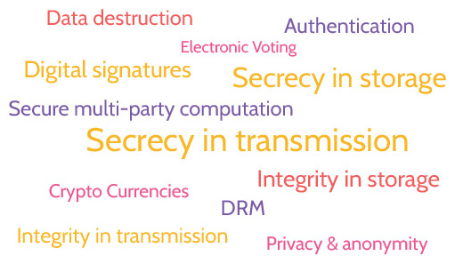
Whether people realize it or not, cryptography is all around us and used every day in multiple ways. When an online purchase is made, cryptography helps ensure the security and privacy of a customer's credit card details and personal information. When a mobile device or computer downloads security updates from Google, Apple, Microsoft, or another software vendor, cryptography ensures the integrity of the files. Criminals often turn to cryptography to hide communications from law enforcement and government agencies. Organizations that sell movies, video games, music, and similar types of consumable entertainment use cryptography for purposes of digital rights management and antipiracy. Other uses of cryptography include secure electronic voting, digitally signing documents, defensible data destruction in the cloud, cryptocurrencies, and the list goes on and continues to grow.
3.6.2 Cryptographic Terminology
CORE CONCEPTS |
|
|
At its core, cryptography is the study and practice of securing communications to prevent attackers from reading or manipulating information.
Figure 3-35 shows how cryptography systems work. Plaintext (in this case "CISSP is awesome") is provided as input into a cryptosystem, and a cryptographic algorithm transforms it into ciphertext. The only way this ciphertext can be transformed back into plaintext by a recipient is through use of a compatible cryptosystem and the same cryptographic algorithm.
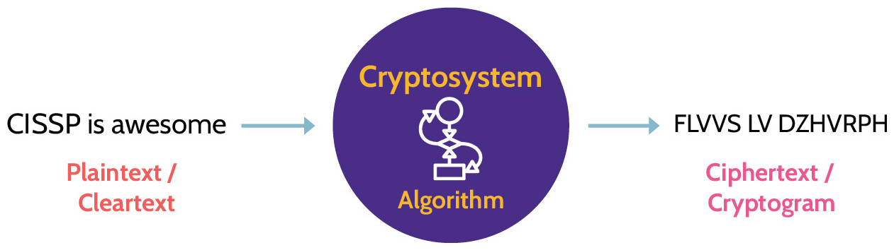
Figure 3-35: Cryptosystem Operation
Table 3-34: Cryptography Terms contains a variety of terms relating to cryptography that you will need to be aware of.
|
Plaintext |
Plaintext, also known as cleartext, is simply data that is readable by anyone. |
|
Encrypt/ Encryption |
Encryption is the process of converting plaintext into ciphertext using a cryptographic algorithm and a key/crypto variable. |
|
Key/Crypto Variable |
A crypto variable is also referred to as a key. When a given piece of plaintext is encrypted with a key, the key determines how the algorithm processes the plaintext to produce ciphertext. Once plaintext has been encrypted with a key, the only way to decrypt the ciphertext is with the appropriate key. The encryption and decryption processes are depicted in Figure 3-36. |
|
Decrypt/ Decryption |
Decryption is the process of turning ciphertext back into plaintext using a cryptographic algorithm and a key. |
|
Key Clustering |
Key clustering describes what happens when two different keys generate the same ciphertext from the same plaintext. This is something that should be avoided, and effective cryptographic algorithms are designed to minimize or, ideally, eliminate key clustering. Key clustering is bad, because if the two different keys can decrypt the same ciphertext, a brute-force attack can be performed twice as fast, as there will be two different keys that can decrypt the ciphertext. In other words, key clustering effectively reduces your key space (number of keys possible) in half. |
|
Work Factor |
Work factor is an estimated amount of time or effort required by an attacker to break a cryptosystem. The higher the work factor, the more secure the cryptosystem. |
|
Initialization Vector (IV)/ Nonce |
Understand what an initialization vector/nonce is, how it is used, and potential weaknesses with it An initialization vector (IV), or nonce, is a random number that is used in conjunction with the key and fed into a cryptographic algorithm when encrypting plaintext. IVs should only be used once in any session and are used to prevent patterns in the resulting ciphertext. In other words, the same plaintext can be fed into a cryptographic algorithm, and even though the same key is used, if a different IV is used, the resulting ciphertext will be different, thus avoiding patterns. When decrypting ciphertext, the same IV used to encrypt the plaintext must be used. If the length of the IV is too short, the resulting ciphertext might be vulnerable to being deciphered. This was the case with Wired Equivalent Privacy (WEP) protocol and effectively rendered WEP useless. |
|
Confusion |
Effective cryptographic algorithms should demonstrate some key properties. The first property is known as confusion, which focuses on hiding the relationship between the key and the resulting ciphertext. The confusion property suggests that if one bit of the key is changed, then about half of the bits in the ciphertext should change. |
|
Diffusion |
Diffusion follows similar thinking as confusion, but is focused on the plaintext. It suggests that if a single bit of the plaintext is changed, then approximately half of the bits in the ciphertext should change. The diffusion property focuses on hiding the relationship between the plaintext and the ciphertext. |
|
Avalanche |
To determine the security and effectiveness of an algorithm, the avalanche effect should be studied. The avalanche effect looks at the degree of confusion and diffusion that an algorithm provides. The ideal case is that a single bit change to either the key (confusion) or to the plaintext (diffusion) will result in at least a 50 percent change in the ciphertext. Figure 3-37 depicts confusion, diffusion, and avalanche. |
Table 3-34: Cryptography Terms
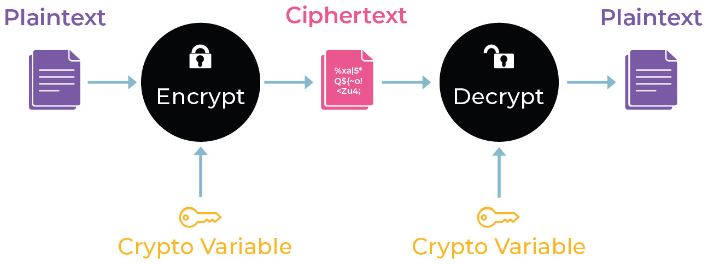
Figure 3-36: Encryption/Decryption
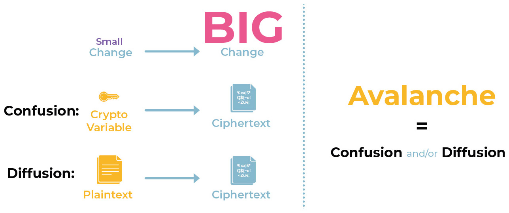
Figure 3-37: Confusion, Diffusion, and Avalanche
Key Space
The term key space refers to the unique number of keys that is available based on the length of the key. For example, a 2-bit key has a total of four possible, or unique, keys:
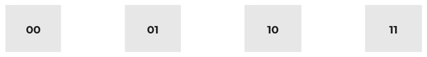
Even with the best algorithm, the means to creating strong and effective encryption is to have strong keys.
Data Encryption Standard (DES) uses a 56-bit key, which equates to 2^56 unique keys, or 72,000,000,000,000,000 (15 zeros, 72 quadrillion) unique keys. This is a really large number of keys, but modern computers can brute-force a 56-bit key in a matter of anywhere from a few hours to several days. The amount of time needed to break a key is also known as the work factor (as already highlighted in Table 3-34).
To significantly increase the work factor, most symmetric keys in use today are 128- or 256-bit keys, while RSA keys are moving toward 2048 bits and above as computing advances.
3.6.3 Substitution and Transposition
CORE CONCEPTS |
|
|
|
|
|
Methods of Encryption
The strongest encryption methods use substitution and transposition as outlined in Table 3-35. If only one round of each method is used, breaking the encryption is fairly easy; thus, with every good method, multiple rounds of substitution and transposition are used. 3-DES, for example, performs forty-eight rounds of substitution and transposition, which provides strong encryption.
|
Substitution |
Transposition |
|
Characters are replaced with a different character GUBBINS > JXEELQV |
The order of characters is rearranged GUBBINS > BINBUGS |
Table 3-35: Substitution and Transposition
Substitution
Substitution, shown in Figure 3-38, is a method of encryption where every plaintext character is replaced/substituted with a different character to create ciphertext. In the example, all G characters are replaced with J, all B characters are replaced with E, and so on, based on a given key. In this case, GUBBINS is the plaintext, and based upon the key used (a simple shift of three letters to the left), the corresponding ciphertext is JXEELQV.
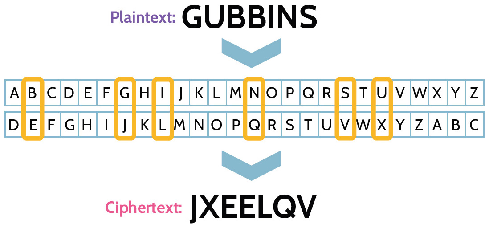
Figure 3-38: Substitution Operation
Transposition
Transposition, shown in Figure 3-39, is a method of encryption where every plaintext character is shifted around/rearranged based on a given key. Using the prior example, based upon the shifting of characters, the plaintext GUBBINS becomes the ciphertext BINBUGS.
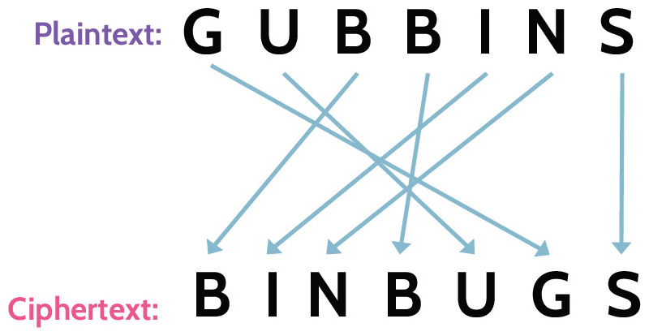
Figure 3-39: Transposition Operation
Understand the inherent weakness of simple substitution and transposition ciphers
In each example, it should be evident that simple substitutions and transpositions do not hide patterns effectively. The word GUBBINS was specifically used to illustrate this fact. The letter B is used twice in GUBBINS, and the resulting ciphertext shows a pattern that reflects this fact. Ultimately, patterns make deciphering the word much easier. In cryptography, patterns should be avoided at all costs, because they significantly undermine the end goal.
Rail Fence (Zigzag)
Another simple form of transposition is called the Rail Fence (zigzag) cipher and is illustrated in Figure 3-40. Basically, the text is transposed by writing it in a table where each row represents a rail, following a zigzag pattern.
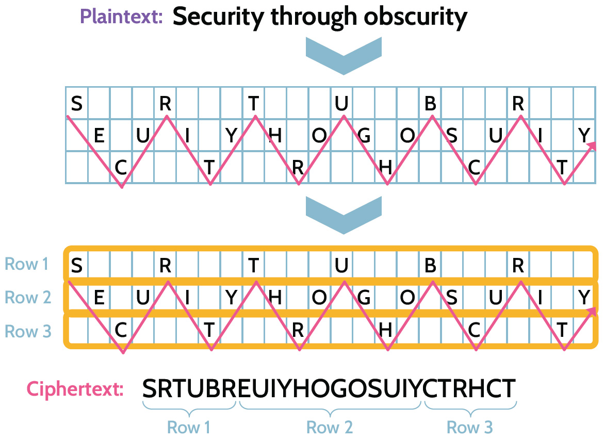
Figure 3-40: Rail Fence Operation
Despite the seemingly more secure-looking output, this form of transposition may still result in patterns being recognizable.
Similarly, transposition ciphers can also be employed using a columnar or a diagonal approach as the key, with the output changing based upon the method used. That is denoted in Figure 3-41.
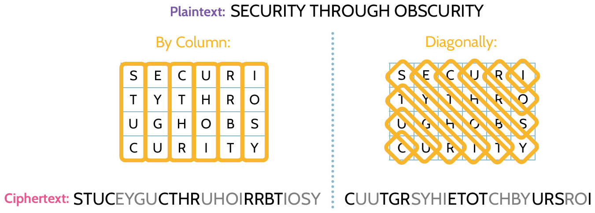
Figure 3-41: Columnar and Diagonal Transposition Ciphers
As highlighted earlier, simple transposition is being used, which means that patterns may still exist in the resulting ciphertext.
Synchronous versus Asynchronous
The examples above could lead a person to believe that cryptography involves the manipulation of actual characters. In fact, cryptography involves the manipulation of bits-1s and 0s-that represent those characters. Cryptography takes the bits that represent, e.g., GUBBINS and manipulates them (using, e.g., substitution and transposition) to create ciphertext.
The bits are manipulated via synchronous or asynchronous methods. Synchronous involves working with bits synchronized through some type of timing mechanism, for example, a clock while encryption/decryption takes place immediately. Asynchronous involves working with collections of bits, and the input is typically dictated by the user or some other element that requires input. A comparison of the two methods is also provided in Table 3-36.
|
Synchronous |
Asynchronous |
|
|
|
Table 3-36: Synchronous vs. Asynchronous Encryption
Repeating Patterns Must Be Avoided
As already mentioned, several times, one of the most important things with any cryptography implementation is the avoidance of patterns. Patterns can severely weaken cryptography, and numerous failures point to key management issues that lead to the emergence of numerous patterns.
To further illustrate, using the English language as an example, common letter usage and patterns exist.
 Most common letter in the English language is E
Most common letter in the English language is E
Most common three-letter word in the English language is the
Most common four-letter word in the English language is that
Using this information, a cryptanalyst could examine ciphertext and count all the letters. The one used most often likely would represent E. Similarly, the most commonly used three- and four-letter combinations in the ciphertext would likely represent the words the and that. In the latter case, the word that begins and ends with the same letter: T. Thus, ciphertext that includes a four-letter combination beginning and ending with the same letter is very likely the word that.
The activity of trying to determine keys based upon letter usage patterns is known as frequency analysis. Individuals who perform this activity are typically well-trained linguists who deeply understand the language and language statistics related to whatever language is used for encryption.
Substitution Patterns in Monoalphabetic Ciphers
Worth reiterating is that simple substitution and transposition does not hide patterns in monoalphabetic ciphers. Frequency analysis can easily detect patterns in them, as denoted in Figure 3-42, which can then lead to determination of the key.
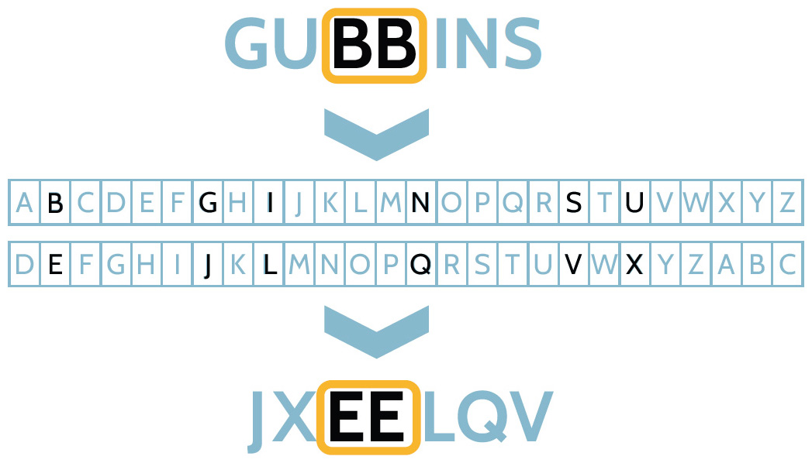
Figure 3-42: Patterns Indicating Encryption Weaknesses in Monoalphabetic Ciphers
Substitution-Polyalphabetic Ciphers
By using polyalphabetic ciphers, frequency analysis becomes much more difficult, because patterns are reduced significantly.
The prefix poly means many, so with polyalphabetic ciphers, multiple alphabets are created and used. Figure 3-43 shows an example of this. The standard alphabet and order can be noted along with the same alphabet in nonstandard format four times. In row 1, the first letter is Z, in row 2, the first letter is Y, in row 3, the first letter is X, and in row 4, the first letter is W. Each row number is part of the key, which in this example is 4312.
Based upon the key 4312, the word GUBBINS becomes CRAZEKR. The first letter G corresponds to C in row 4, the second letter U corresponds to R in row 3, and so on and so forth. In the case of letter I, key usage starts over at row 4, so I corresponds to E, N corresponds to K in row 3, S corresponds to R in row 1. If the word were longer, or a phrase were involved, key usage would repeat in the same manner until the word or message was encrypted.
As can be seen, in this example, no patterns exist. Though B is used twice in the plaintext, it becomes A and Z in the ciphertext because a polyalphabetic cipher was utilized.
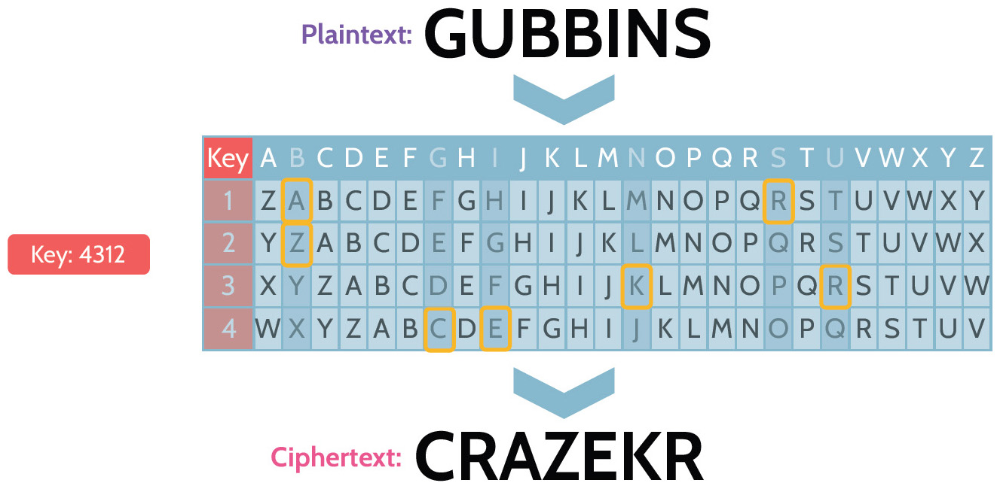
Figure 3-43: Lack of Patterns in Polyalphabetic Ciphers
Substitution-Running Key Ciphers
Another cipher that hides patterns very well is known as the running key cipher, which has been used throughout history and especially so after World War II, when distrust between countries was extremely high.
To utilize the running key cipher, the same "book" must exist at both ends of the communication channel. For example, imagine a spy located in one country who needs to communicate with a government located in another country. The spy and the government would both need the same book.
When the spy wishes to communicate with their government, the message that needs to be encrypted is combined with text from the book that appears in a specific location in the book. For example, the spy and government would both know that the starting point is page 32, paragraph 1, sentence 1, word 5. With this knowledge, the secret message is combined with the corresponding text to create ciphertext. The way the letters are combined is via the numeric equivalent of each letter as shown in Figure 3-44. In this case, the numeric equivalent of each letter in the word GUBBINS is combined with the corresponding numeric equivalent of each letter of the text that corresponds with the predetermined starting point from the book, in this case THEQUIC.
So, the value of G-7-is combined with the value of T-20, which yields 27. As noted in the illustration below, the English alphabet contains only twenty-six letters, so in cases where a combined number is greater than twenty-six, the formula (combined number) - 26 = n should be followed. With the first letter, 27-26 = 1, so the first ciphertext letter is A.
For the second letter, U - 21 + H - 8 yields 29. Using the formula, 29-26 = 3, so the second ciphertext letter is C. Following the same method, the third ciphertext letter is G, because B (2) and E (5) = 7, which corresponds to G.
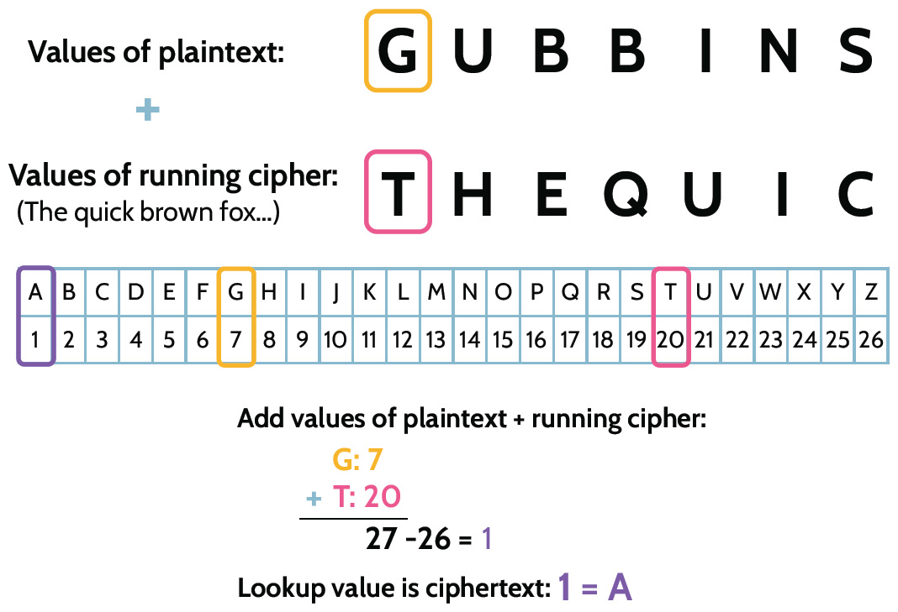
Figure 3-44: Running Key Cipher Operation
Because a book is used, a very large number of possible keys exist, and each subsequent communication would simply require each party knowing the starting point for purposes of encryption/decryption. As long as a previously used key is not reused, this method of communication can remain very secure. For this reason, spies and their home offices often utilized what's known as a code book. That is a book that has a predetermined starting point acting as the encryption/decryption key for each message. Once a key was utilized, that page in the book would be destroyed, so the key could not be used again.
Substitution-One-Time Pads
With a one-time pad, after every message is encrypted, the key is changed and never reused. Additionally, the key length with one-time pads is always the same length. When implemented and used correctly, one-time pads are the only unbreakable cipher systems.
Stream versus Block Ciphers
All symmetric and asymmetric algorithms in cryptography work with bits, not letters. Once a message has been turned into bits, two options exist with regards to how those bits are encrypted and decrypted.
In one case, bits can be worked on one bit at a time as a stream; in the other, bits can be worked on in collections, or blocks of data. So the two types of ciphers that exist are known as stream ciphers and block ciphers. Block ciphers are more versatile than stream ciphers, but this versatility comes at the cost of speed and code size. We tend to favor stream ciphers in low-end devices, and in circumstances where we want to maximize efficiency.
Stream ciphers deal with one bit at a time and are faster, as opposed to block ciphers which work on one block and then must wait momentarily to work on the next block, until all information is encrypted. Stream and block ciphers are summarized in Table 3-37.
|
Stream |
Block |
|
Encrypt/decrypt data one bit at a time |
Encrypt/decrypt blocks of bits at a time (for example, AES has a 128-bit block size) |
Table 3-37: Stream vs. Block Ciphers
Stream Ciphers
When considering stream ciphers a bit further, on the surface it doesn't sound like much can happen with a bit when it is either a 0 or a 1 and can only remain a 0 or a 1. In other words, encryption of only 0 or 1 leaves little to no options. So a bit of creativity needs to be employed to enhance the encryption process.
Look at Figure 3-45.
Plaintext bits that need to be encrypted are combined with bits generated by a keystream generator, which is seeded by a crypto variable.
The bits are combined using a logical operation called "exclusive or," or XOR, which helps create the needed confusion and diffusion to make a stream cipher secure.
In the XOR process, 0 + 0 = 0, 0 + 1 = 1, 1 + 0 = 1, 1 + 1 = 0 (in other words, the output will be 1 if only one of the inputs is 1).
The result from each XOR operation becomes the ciphertext.
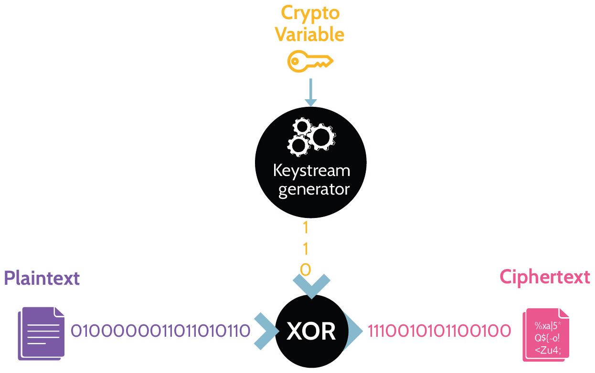
Figure 3-45: Stream Cipher Operation
The most commonly used stream cipher is Rivest Cipher 4 (RC4).
Block Ciphers
Block ciphers encrypt data in chunks that we call blocks. As an example, AES has a 128-bit block size.
As Figure 3-46 illustrates, instead of bits being encrypted one at a time, they're encrypted in blocks.
Plaintext blocks, like the letters GUB and BIN, are processed by a block cipher that has been seeded by a crypto variable.
The output of each operation results in chunks of ciphertext, JXE, ELQ, and the S as V.
Each block is processed individually.
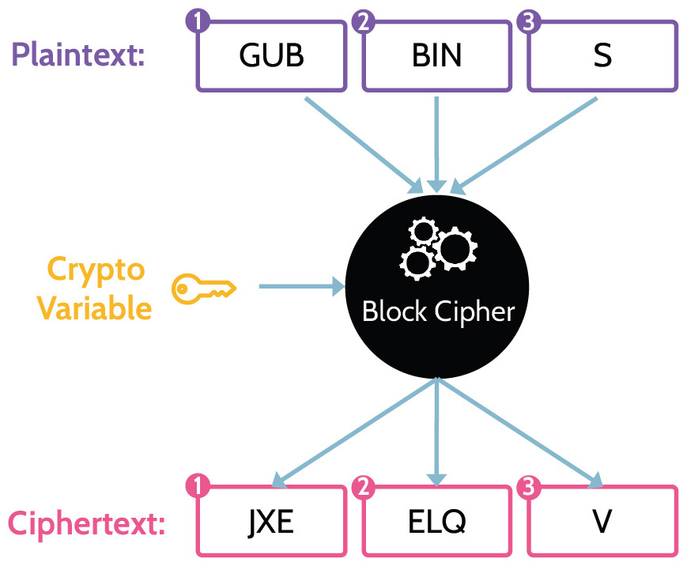
Figure 3-46: Block Cipher Operation
Symmetric Block Modes
Understand which mode of symmetric cipher is faster/slower
In cryptography, stream ciphers provide a clear speed advantage over block mode ciphers, because they work with one bit at a time as opposed to block ciphers that need to fill blocks and do creative operations with those blocks. This fact that stream ciphers work with one bit at a time makes them especially suitable for encryption across networks and at the hardware level. However, block mode ciphers also provide an advantage, namely, that they have a high diffusion rate and are very resistant to tampering.
Any block mode cipher, like DES or AES, for example, will support the five modes listed in Table 3-38. Specifics worth noting about each mode are noted in the "Characteristics'" column. Depending on the need, it might make sense to use one block mode over another. For example, for the encryption of short, nonrepeatable amounts of characters or numbers, ECB works very well, because it is very fast. However, for something like email or text messaging, or anything that might include the same text or numbers, ECB is not very secure. Due to its lack of use of an IV, the same text would result in the same ciphertext being produced, and patterns would emerge, making it susceptible to cryptanalytic attacks and successful deciphering.
For email and longer messages, CBC, CFB, and OFB all work well, because each cipher mode employs an IV as part of the encryption process.
From a speed and security standpoint, however, CTR is likely the best mode to use for longer messages. CTR uses a counter, which is a random initial number (an initialization vector) that is incremented by 1, 2, 3, and so on during each subsequent encryption of blocks. CTR is fast, and due to use of a counter, patterns in the ciphertext do not exist. As a result, it is the most commonly used block mode cipher.
|
Name |
Function |
Characteristics |
|
Electronic Codebook (ECB) |
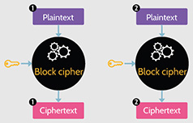 |
|
|
Cipher Block Chaining (CBC) |
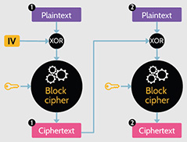 |
|
|
Cipher Feedback (CFB) |
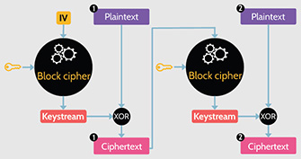 |
|
|
Output Feedback (OFB) |
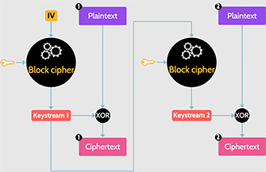 |
|
|
Counter (CTR) |
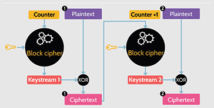 |
|
Table 3-38: Block Cipher Modes
3.6.4 Steganography and Null Ciphers
CORE CONCEPTS |
|
|
Understand the premise underlying steganography and null ciphers
Steganography and null ciphers are both related to cryptography and used quite extensively. Steganography refers to concealing a message within something else, and there are different ways to do this. For example, physical steganography could be as simple as writing a password on a sticky note and hiding the note under a keyboard. Modern steganography implies that technology-driven techniques are used, like hiding a message within an image file, or a music file, or utilizing slack space on a hard drive. Slack space is the leftover storage that exists when a file does not need all the space it has been allocated.
As an example of steganography, another way to hide something within something else is using a null cipher. A null cipher hides a message by embedding the plaintext message within other plaintext or noncipher materials. For example, the first letter of each word in a sentence or paragraph could spell the secret message; see Figure 3-47.
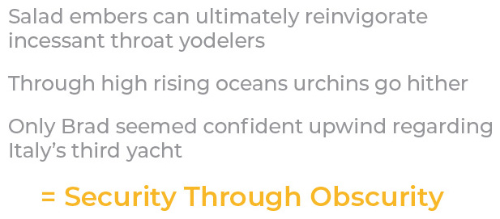
Figure 3-47: Null Cypher Example
Steganography and null ciphers are summarized in Table 3-39.
|
Steganography |
Null Cipher |
|
Plaintext is hidden within something else (e.g., a picture) |
Plaintext is mixed with a large amount of nonciphertext |
Table 3-39: Stenography and Null Ciphers
3.6.5 Symmetric Cryptography
CORE CONCEPTS |
|
|
|
|
Understand advantages and disadvantages of symmetric cryptography
Symmetric key cryptography is extremely fast and can encrypt massive amounts of data. In the context of networks-trusted and untrusted-where significant amounts of data need to be encrypted/decrypted quickly, symmetric cryptography tends to be the best solution.
However, key distribution is a glaring and inherent weakness, especially if the parties involved in communication are separated by any amount of distance. Out-of-band communication can be used to overcome this weakness, but this itself is not necessarily the best or most feasible solution. Out-of-band implies that normal communication channels are not utilized to exchange a key, so internet-based solutions would not qualify. Rather, a meeting in person, a voice call, or perhaps an SMS message could be utilized for the purpose of key exchange. In addition to the key distribution problem associated with symmetric cryptography, a problem with scalability also exists. Scalability refers to the number of symmetric keys that would be required to support secure communications among a large group of users. For example, if two people want to communicate with each other, only one key is required. However, if three people want to securely communicate with each other, three keys would be required. Four people would require six keys. With each new person added, the number of keys required for secure communication doubles; so, the key requirement grows exponentially. A simple formula can be used to determine the number of keys required for a given number of people to securely communicate with each other:
n * (n-1) / 2 = number of keys
n = number of people
For example, for 1000 people, 1000 * (1000-1) / 2 = 499,500 keys. That's a tremendous number of keys, and it underscores the key distribution management problem that exists with symmetric cryptography. Table 3-40 shows a summary of advantages and disadvantages of symmetric cryptography.
|
Advantages |
Disadvantages |
|
|
|
Table 3-40: Advantages and Disadvantages of Symmetric Cryptography
A number of symmetric key algorithms exist, and several of them are popular and heavily used. For example, Data Encryption Standard (DES), which uses an algorithm called Data Encryption Algorithm (DEA) is still used, though its key length of 56 bits leaves it susceptible to brute-force attacks. Knowing the risks associated with shorter key lengths, other algorithms have been developed over the years, including the International Data Encryption Algorithm (IDEA), with its key length of 128 bits-the first symmetric algorithm to use this length. In addition to its longer key length, IDEA is significant, because PGP supported it first. PGP is a cryptosystem that became available in the early 1990s that offers the five services that cryptography can support.
Even with the strength of IDEA due to its 128-bit key length, it never became popular. In fact, the problem with DES's 56-bit key length was addressed by development of 2-DES (Double DES) and 3-DES (Triple DES), which make it more secure and will be discussed further below.
Rank symmetric algorithms from weakest to strongest
As can also be seen in Table 3.41, several Rivest cipher (RC) algorithms exist (attributed to Ron Rivest). One of Rivest's cipher algorithms-Rivest Cipher 4 (RC4)-is a stream cipher, while others like RC5 and RC6 are block ciphers.
Regardless of the algorithm, longer key lengths equate to larger key spaces, which provides better overall key strength and security against brute-force attacks.
|
Strength |
Name |
Key Length (Bits) |
Block Length (Bits) |
|
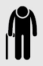 Weak |
RC2-40 |
40 |
64 |
|
DES |
56 |
64 |
|
|
RC5-64/16/7 |
56 |
128 |
|
|
Medium |
RC5-64/16/10 |
80 |
128 |
|
Skipjack |
80 |
64 |
|
|
Strong |
RC2-128 |
128 |
8 |
|
RC5-64/12/16 |
128 |
128 |
|
|
IDEA |
128 |
64 |
|
|
Blowfish |
128 |
64 |
|
|
3DES |
168 = 112 |
64 |
|
|
Very Strong |
RC5-64/12/32 |
256 |
128 |
|
Twofish |
256 |
128 |
|
|
RC6 (derived from RC5) |
256 |
128 |
|
|
Rijndael (AES) |
128, 192, or 256 |
128 |
Table 3-41: Symmetric Algorithms
DES/3-DES
DES, 2-DES, and 3-DES all share the same basis, a 56-bit key, sixteen rounds of substitution and transposition, and a 64-bit block size. From a confusion and diffusion perspective, based upon the multiple rounds of substitution and transposition, DES is one of the best algorithms available. As a result of this strength, the cryptography industry has found ways to extend the life of DES by developing variations known as 2-DES and 3-DES. 2-DES works by doubling the number of keys used. So instead of using a single 56-bit key, two 56-bit keys are used. 3-DES works similarly but does not take its name from the number of keys used but rather the fact that three iterations of the algorithm always take place. In fact, 3-DES can use two or three keys. Its characteristics have been summarized in Table 3-42.
|
56-bit key |
|
16 rounds of substitution and transposition |
|
64-bit block size |
|
2-DES-susceptible to meet-in-the-middle attack |
|
3-DES-effective key length is 112 bits |
Table 3-42: DES Characteristics
Understand why the effective key length of 3-DES (Triple DES) is 112
One thing worth mentioning about DES involves an attack known as "meet-in-the-middle" and pertains to 2-DES and 3-DES. Remember, 2-DES uses two 56-bit keys, so the key length is 112 bits; 3-DES uses three 56-bit keys, so the key length is 168 bits. However, because of the way the meet-in-the-middle attack works, which effectively removes 56 bits of strength, the effective key length of 2-DES is reduced to 56 bits and 3-DES is reduced to 112 bits. Without getting into the technical specifics, a meet-in-the-middle attack works by attacking both ends of the key space and working toward the middle. Once the middle is reached, both keys are known. Take 2-DES for example. In order to encrypt a plaintext with it, like the word CISSP, it first is encrypted with key1 (producing, e.g., 2873!@dOIUD), and that is then encrypted with key2 (producing, e.g., NBDJ029845!@). The attacker will try to generate all possible key1 combinations (2^56) and all key2 combinations (2^56) so they can:
1. Take the plaintext (CISSP) and encrypt it with numerous key1 values (generated by all combinations in the 2^56 key space)
2. Take the final ciphertext (NBDJ029845!@) and try to decrypt it with numerous key2 values (generated by all combinations in the 2^56 key space).
3. When the output of #1 matches that of #2, the attacker can successfully decrypt the plaintext.
As a result, 2-DES is really no more secure than DES, and it is not used. 3-DES was considered stronger, with an effective key length of 112 bits, but it has since been disallowed by NIST. The current NIST standard now is AES256.
Rijndael/Advanced Encryption Standard (AES)
As was noted earlier, Rijndael-better known as AES-was the winner of a US government-sponsored competition.
AES is considered a variable key size algorithm, which means key sizes of 128, 192, and 256 are all supported, while the block size is always 128 bits. An interesting side note is that Rijndael supports block sizes of 128, 192, and 256, but the US government did not adopt the extra block sizes.
The ChaCha family
The ChaCha family of algorithms are variants of the Salsa family, which are all ciphers developed by Daniel J. Bernstein. ChaCha8 is a 256-bit stream cipher that's based on the 8-round Salsa20/8 algorithm. The design improves the diffusion for each round, which aims to increase the resistance against cryptanalysis. It also lowers the time per round. There is also ChaCha12 and ChaCha20, with 12 and 20 rounds, respectively. On many systems, ChaCha20 can even run faster than AES. Organizations like Cloudflare and Google are now offering support for TLS cipher suites that are based on ChaCha20-Poly1305 AEAD. This combines ChaCha20 with the Poly1305 hash family. The resulting authenticated encryption with associated data (AEAD) allows us to encrypt data as well as verify its integrity and authenticity.
Out-of-Band Key Distribution
Understand why out-of-band key distribution is necessary
With symmetric key cryptography, one of the biggest challenges is key distribution, because the sender and receiver of an encrypted message must have the same key. Sending the key via the same communication channel used to send the message itself is ineffective, because the key could easily be intercepted and used to read the encrypted message as well as any further encrypted communication.
So, some type of out-of-band-and ideally more secure-key distribution method must be employed to share the key, as also highlighted in Figure 3-48.
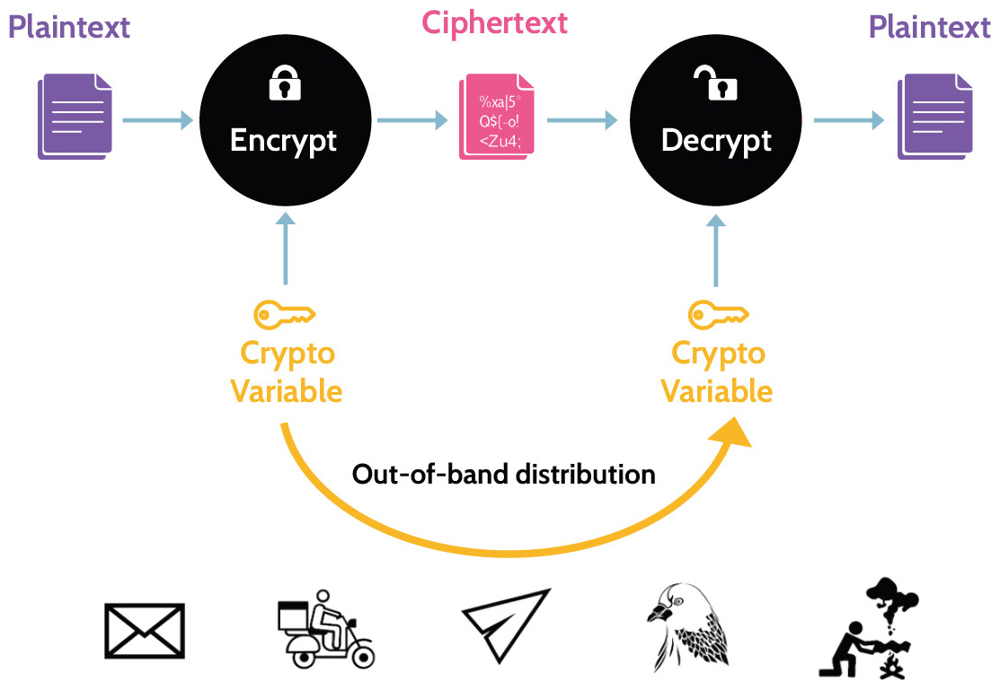
Figure 3-48: Out of Band Distribution
Out-of-band distribution might mean the two parties meet someplace and exchange the key, sending a letter, having a phone call, or some other means by which the key can be shared.
3.6.6 Asymmetric Cryptography
CORE CONCEPTS |
|
|
|
|
|
Understand advantages and disadvantages of asymmetric cryptography and how these compare to symmetric cryptography
As discussion about symmetric cryptography explained, it is very fast, but the fundamental problem with key distribution is significant. As a result, cryptologists explored ways to solve the key distribution problem, and in the 1970s two of them-Diffie and Hellman-developed an idea they called "public key cryptography." They premised their idea on the fact that symmetric key cryptography requires the sender and receiver to share the same key, and they asked "What if everybody had two keys that were related to each other mathematically, with the mathematical linkage being such that if something is encrypted with one key it can never be decrypted using the same key? Rather, the other key would need to be used." This way, one of the keys can be shared with everybody for communication purposes, and this key can be known as the public key. The other key would be retained by the owner and be known as the private key; it would not be shared with anybody else. Then, if anybody wants to send the owner a secret message, they can encrypt the message using the public key, and because only the mathematically linked key-the private key-can be used to open the message, nobody else would be able to read it.
So the problem with key distribution is solved, because the only key that ever needs to be shared with anybody is the public key, and it can be shared via any and every means available.
Because the linkage between the public and private key pair is mathematically based, it's critical that very complex mathematics be utilized to prevent someone from looking at a public key and computing the private key relationship. Thus, because of the mathematical relationship between a public and private key pair, asymmetric cryptography is significantly slower than symmetric cryptography. Furthermore, as processors become faster, asymmetric algorithms need to be strengthened, which means asymmetric cryptography becomes even slower. A perfect example of this is Rivest, Shamir, and Adleman (RSA). RSA is the most commonly used asymmetric algorithm, and its strength has had to continue to increase to mitigate advancements in processing technology. While its strength has increased, its functionality has slowed due to the increased mathematical complexity required to keep the key pair secure.
In addition to solving the key distribution and scalability issues associated with symmetric cryptography, asymmetric cryptography provides some other significant benefits, namely in the form of digital signatures, authenticity (also referred to as proof of origin), and other services. Because of the key pair relationship and the idea that the private key should remain secure and private, if somebody wants to prove to somebody else that a certain message was sent by them, they can encrypt the message using their private key. Anybody with the public key could decrypt and read the message, but this might not matter as much as proving that the sender of the message is who they say they are. This is known as authenticity or proof of origin.
Looking at symmetric and asymmetric cryptography together, it's clear that each offers advantages and disadvantages; yet the disadvantage of one is usually found as an advantage with the other. Thus, both types of cryptography are often used together in what's known as hybrid cryptography, or hybrid mode, which is what SSL/TLS uses. See Table 3-43.
|
Advantages |
Disadvantages |
|
|
|
Table 3-43: Asymmetric Cryptography Advantages and Disadvantages
Figure 3-49 shows two uses of asymmetric cryptography. The top part shows how it addresses proof of origin, while the bottom part shows how to address confidentiality.
To obtain confidentiality, anybody who wants to send you a secret message can encrypt the plaintext message using your public key. Remember, anybody else having access to the public key cannot decrypt that message; only the holder of the private key can decrypt it. Thus, when you receive the message, you'll use your private key to decrypt and read it, which you only have access to.
Whenever confidentiality is desired, the public key of the receiver should be used to encrypt the message; then, only the receiver's private key can be used to decrypt the message.
To obtain authenticity, or proof of origin-identify with certainty who a message came from-a sender should encrypt the message using the sender's private key. Anybody with the sender's public key can decrypt the message and therefore know without a doubt who sent the message, as the sender is the only person having access to their private key. Though this example does not provide confidentiality, it does provide authenticity or proof of origin-knowing the source of the message.
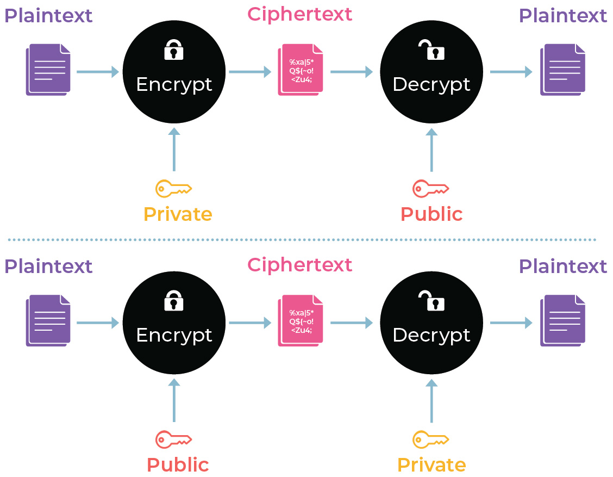
Figure 3-49: Using Asymmetric Cryptography for Proof of Origin and Confidentiality
A good example might include situations where software patches are concerned. When Microsoft publishes patches, end users want to know with certainty that the patch is issued by Microsoft. If Microsoft encrypts the patch with their private key, all end users with Microsoft's public key can decrypt it and know with confidence that the patch they're applying to their servers is a valid vendor patch.
Hard Math Problems
Two hard mathematics problems are still primarily used for key generation: factoring and discrete logarithms as denoted in Figure 3-50. Note that for each of the examples below, very small numbers are being used, but in reality, cryptography would use significantly larger numbers.
The idea behind factoring is that multiplication can be done very quickly and easily-take two large prime numbers and multiply them to come up with a result. However, with only the result on hand, it is very difficult to determine two numbers that were multiplied together to produce that. If two significantly long prime numbers are multiplied together, determining those numbers based upon only the result could take several years. This is the type of math used by RSA for key generation and helps explain why RSA is so effective for purposes of cryptography.
With discrete logarithms, a different type of mathematics is being used by all the other asymmetric algorithms, like Elliptic Curve (ECC) and Diffie-Hellman, to name a couple. In this case, any prime number is raised to the power of another prime number to determine a result. As with factoring, this process can be performed very quickly and easily. However, with only the result on hand, it can be extremely difficult to determine what was the prime number that was raised to the power of another prime number to produce that result.
It should be noted at this point that mention of the use of prime numbers is very specific. A prime number is special in that it can only be divided by itself or by 1. Thus, when factoring is used, there is only one solution to the problem.
Finally, a third hard math problem exists-the Knapsack problem-but it is not used anymore, because attacks have been identified that can break any algorithm that uses it. In other words, attacks can solve the Knapsack problem, which has effectively made any algorithm that uses it insecure and useless. Deprecated algorithms that use the Knapsack problem include Chor Rivest Knapsack and Merkle Hellman Knapsack algorithms.
To summarize:
Factoring and discrete log asymmetric algorithms depend on using very large prime numbers.
When using such large numbers, it is very difficult to work backward to determine the original integers.
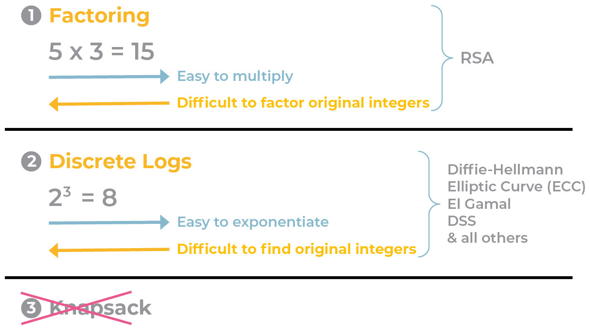
Figure 3-50: Factoring and Discrete Logarithms Operation
Asymmetric Algorithms
Understand an advantage ECC has over RSA
Table 3-44 contains some of the most popular asymmetric algorithms in use today. Despite having been around since the late 1970s, RSA, for example, is still extensively used, because it continues to provide exceptional security. Despite efforts, no significant weaknesses have been identified. This points to the way that hard mathematical problems can be used so effectively and successfully.
Elliptic Curve (ECC) was developed in the early 2000s, and it improved upon RSA by allowing for the use of shorter keys to achieve the same level of security. This improvement came because of ECC using discrete logarithm mathematics for key generation instead of factoring. As a result, ECC is faster and more efficient. ECC is particularly useful in situations where bandwidth, computational power, and storage capacity might be limited, e.g., on mobile phones.
Understand the two primary types of hard math problems used with asymmetric cryptography and which type is used
Like RSA, the Diffie-Hellman Key Exchange was developed shortly before RSA, and it too continues to provide very effective encryption services, though it is almost exclusively used today for the exchange of symmetric keys between parties.
Remember that RSA uses factoring of large prime numbers for key generation, while ECC and Diffie-Hellman both use discrete logarithms.
Quantum Key Distribution
Quantum key distribution is another emerging technology that aims to solve the key distribution problem. Out-of-band channels aren't always available, and many of our current public-key algorithms are at risk if quantum computers become practical (but NIST is currently working on public-key algorithms that will be safe in a post-quantum world). Describing the physics behind quantum-key exchange is a little outside of our wheelhouse, but you may have heard about how even the act of observing a quantum system ends up changing the system itself. If we take this principle and apply it to key exchange, then in a quantum system, anyone observing a key exchange-or intercepting a key exchange-ends up impacting it. Therefore, if anyone is eavesdropping on quantum key distribution, the two parties exchanging keys will know about it. However, quantum key distribution is still fairly experimental at this stage and it has a number of challenges to overcome before we see it implemented widely
|
Rivest, Shamir, and Adleman (RSA) |
Uses factoring mathematics for key generation. |
|
Elliptic Curve (ECC) |
Uses discrete logarithm mathematics for key generation. ECC uses shorter keys than RSA to achieve the same level of security, which means ECC is faster and more efficient. |
|
Diffie-Hellman Key Exchange |
Uses discrete logarithm mathematics for key generation is primarily used for the exchange of symmetric keys between parties. |
Table 3-44: Common Asymmetric Algorithms
3.6.7 Hybrid Key Exchange
CORE CONCEPTS |
|
|
Diffie-Hellman Key Exchange Protocol
The value and use of Diffie-Hellman Key Exchange Protocol
Referring to the early discussion about symmetric and asymmetric key cryptography, it was made clear that symmetric key cryptography is the best, and really only, thing to use when speed and bulk processing are required. It is the only type of cryptography that can host the speeds required for being able to encrypt and decrypt fast enough for the applications that require cryptography today. For example, with a VPN, only symmetric key cryptography can be used to efficiently support the amount of data traversing the network. The fact that symmetric key cryptography is used means that the same key needs to be on each end of the connection, and this presents a challenge-securely communicating the key between a remote user and the corporate network. This challenge is resolved through a bit of mathematical magic, and this method is used by all VPN solutions to generate the same secret at each end for purposes of encryption and decryption during each VPN session. In fact, this is why these keys are called session keys. Session keys are symmetric keys that are used for specific sessions-they are only used for one session, and when a new session is started a new session key will be generated. If a given VPN session ends for any reason, the establishment of a new VPN session would include the negotiation of a new symmetric key. For this key to be agreed to, without sending it across the network where it could be intercepted, the Diffie-Hellman Key Exchange Protocol would be utilized. The way this protocol works is described in Figure 3-51.
Let's imagine that Alice wants to communicate from a remote location with Bob, who is located at the corporate office.
1. Alice's and Bob's systems each generate a random number, 7 and 3, in this example. The numbers are essentially a secret, as they don't know each other's numbers.
2. On each end, the random number is multiplied by the same number, in this example 2. As a result, Alice's number is now 14 and Bob's is 6. Keep in mind that with a real scenario, the actual numbers used would be much more complex, as would be any applied mathematical computations, which would actually entail one-way operations-in other words, operations that could not be easily reversed by an attacker. The numbers here are simply to help illustrate the concept.
3. At this point, Alice and Bob each have numbers related to each other mathematically. Alice's and Bob's systems send the numbers to each other; Alice's system sends 14 to Bob's system, and Bob's sends 6 to Alice's.
4. At this point, they each relate the number they received back to the original random number through a multiplication operation. So, Alice multiplies the number she received (6) with her original number (7), and Bob does the same (14 x 3).
5. Quick math shows the result of the mathematical operation to be 42-the key-on both sides.
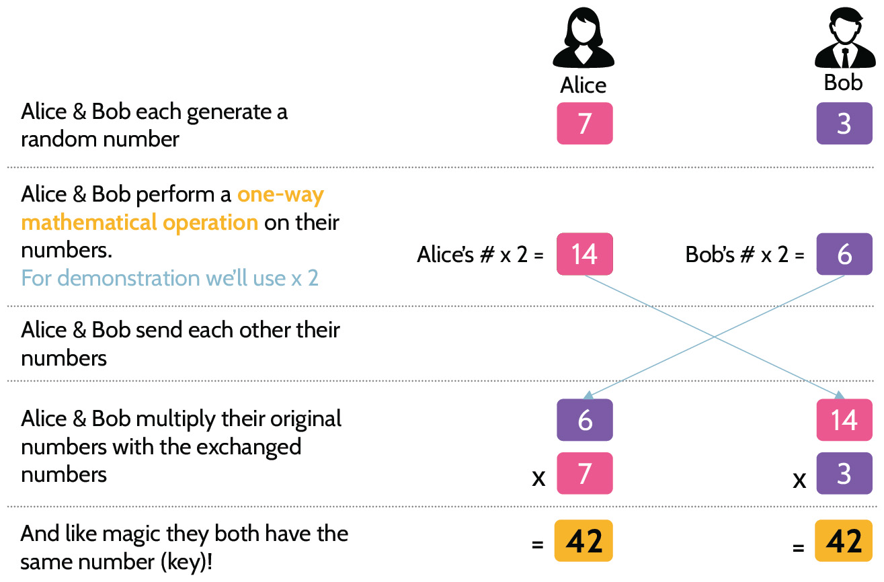
Figure 3-51: Diffie-Hellman Operation
Though simple, this example illustrates how a bit of mathematical magic serves to generate the same secret at both ends, which really represents the symmetric session key that can be used for encryption and decryption purposes. This process explains why Diffie-Hellman is referred to as a key management protocol.
Hybrid Cryptography
Hybrid cryptography was mentioned earlier in the context of advantages offered by symmetric and asymmetric cryptography. In each case, the advantage of one often counters the disadvantage of the other, which implies that the use of both types in a hybrid fashion can be particularly effective. Remember that symmetric cryptography is extremely fast, but key distribution is a problem that asymmetric cryptography solves but in a much slower manner.
Hybrid cryptography solutions employ the advantages of symmetric and asymmetric cryptography. Symmetric algorithms are used for bulk processing and speed-for anything that requires frequent encryption and decryption and where both need to be done very quickly. Asymmetric algorithms are used to exchange symmetric keys. Additionally, most hybrid solutions incorporate hashing algorithms for purposes of integrity, the ability to create digital signatures for purposes of nonrepudiation, and other features.
Figure 3-52 illustrates how a simple hybrid solution works. In this case, Alice wants to send Bob a very large message. As a result, she can only use symmetric cryptography, and let's assume she chooses to use 3-DES and picks one of the keys that it uses. Alice knows that for Bob to be able to decrypt the message, he's going to need the exact same symmetric key used by Alice to encrypt the message.
To share the symmetric key securely with Bob, Alice knows that she can encrypt it with Bob's public key and send this to Bob. Because Bob keeps his private key secure and only known to himself, he is the only person who can decrypt the symmetric key sent by Alice. Once decrypted, Bob will then have the same session key, which will allow him to quickly decrypt and read Alice's very large message.
Though simple, this is a great example of hybrid cryptography-a combination of symmetric and asymmetric cryptography.
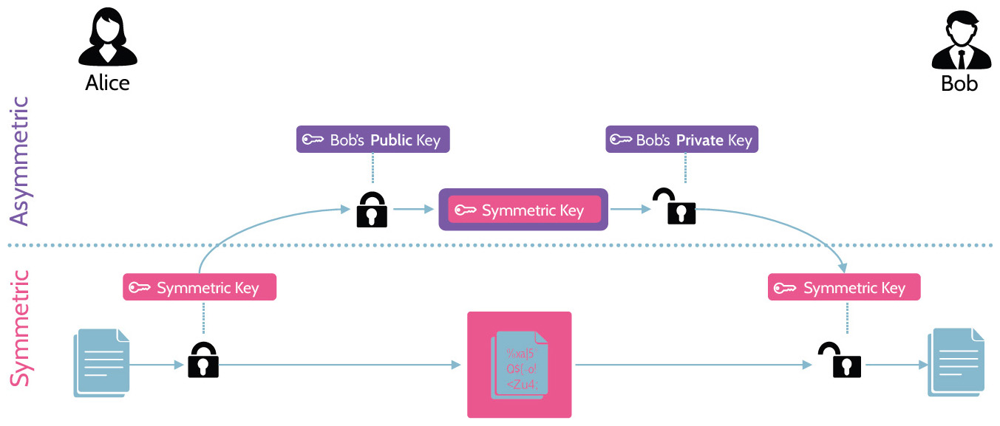
Figure 3-52: Hybrid Cryptography Operation
3.6.8 Message Integrity Controls
CORE CONCEPTS |
|
|
|
|
|
|
As a refresher, it has been mentioned that there are five core services that can be provided by cryptography:
Confidentiality
Integrity
Authenticity (proof of origin)
Nonrepudiation
Access control
What is the primary goal underlying the use of message integrity controls (MICs)?
In the context of security and cryptography, integrity means something is intact and unchanged from its original state. Message integrity checks (MICs) are designed to ensure that messages remain unchanged from the time of creation to the time they're read. Changes to a message can happen intentionally or unintentionally, and MICs can help identify when changes have occurred, regardless of the cause. Note that message integrity controls and message integrity checks can be used interchangeably.
From a cryptographic perspective, if one person sends another person a message, something needs to be done to the message first to create a representation of it. Then, when the message is sent, the representation of the message is also sent. The recipient then takes the message, applies the same integrity algorithm as the sender, and compares the resulting representation of the message with the representation included by the sender with the original message. If the two representations match, integrity of the message is confirmed.
Figure 3-53 shows several types of MICs. Each control is based upon mathematics, which differ between each of them. Cyclical redundancy check (CRC), checksum, and Hash Message Authentication Code (HMAC) controls tend to use very simple math, while the controls based on hashing algorithms use much more complex math. The simple math used by these basic message integrity controls is very susceptible to something known as a collision, meaning two different messages can result in the same representation of each message. Collisions are described in more detail below. Hashing algorithms, on the other hand, are much more sensitive to small bit changes and much more resistant to collisions, and they are therefore much more effective as integrity control mechanisms.
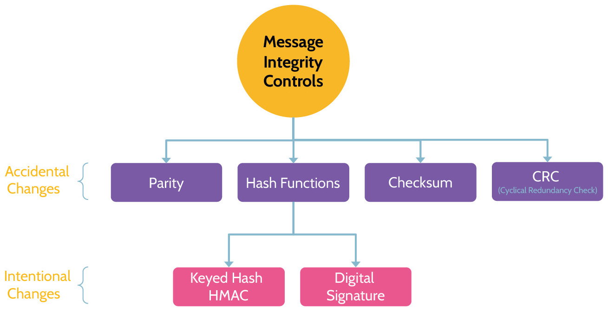
Figure 3-53: Message Integrity Controls
Hashing
The key elements that make hashing algorithms so effective are outlined in Table 3-45.
|
Fixed length digest |
A message of any length can be hashed, resulting in a fixed length message digest. For example, a 20-terabyte hard drive or a single sentence email could be run through the same hashing algorithm and the results will be digests (hash values) of exactly the same length. The length of digests for common hashing algorithms are listed below. Any length input always equals the same length output. |
|
One-way |
Hashing relies on one-way mathematical functions that generate an output - a fixed length message digest (hash value) - that represent the input, but it is NOT possible to go backwards and figure out the original input. In short, it is not possible to determine the input of a hashing algorithm by inspecting the output. |
|
Deterministic |
If the same message is hashed twice using the same algorithm, the message digest will be exactly the same in each case. The same input always equals the same output. |
|
Calculated on entire message |
For a message digest to be trustworthy, it must be calculated on the entire message, not simply a portion of it. |
|
Uniformly distributed |
A good hashing function should map the inputs as evenly as possible over its output range. In other words, there should be a roughly equal probability of any hash value being generated. |
|
Collision resistant |
A collision takes place when two different input values generate the same output. A good hashing algorithm should generate a completely different output even if only a single bit of the input is changed. A hashing algorithm would not be useful to prove integrity if the input could be modified and exactly the same hash value was generated on the original input and the modified input. It should be very hard to find two inputs that hash to the same output. |
Table 3-45: Hashing Algorithm Key Properties
Hashing Algorithms
Several of the most popular hashing algorithms are noted below with the length of their outputs.
MD5: 128-bit digest
SHA-1: 160-bit digest
SHA-2: 224/256/384/512-bit digests
SHA-3: 224/256/384/512-bit digests
MD5 message digests are always 128 bits in length. SHA-1 digests are always 160 bits in length. In the case of SHA-2 and SHA-3, the message digest length is determined by the version used. The longer the digest, the less opportunity for collisions.
Collisions
Collisions occur when the hash values-digests-from two different inputs are the same. As a result, integrity of a message can't be confirmed. In the case of sensitive communication between two parties, imagine if a man in the middle was able to modify a message in such a way that the digest of the original message and modified message were the same. This could potentially lead to serious consequences, as the receiving party would think the message is uncorrupted.
Figure 3-54 illustrates how a collision occurs. Two different messages exist (#1 and #2), which have different content and length. When they're run through the same hashing algorithm, however, they each result in the same message digest. This is a collision.
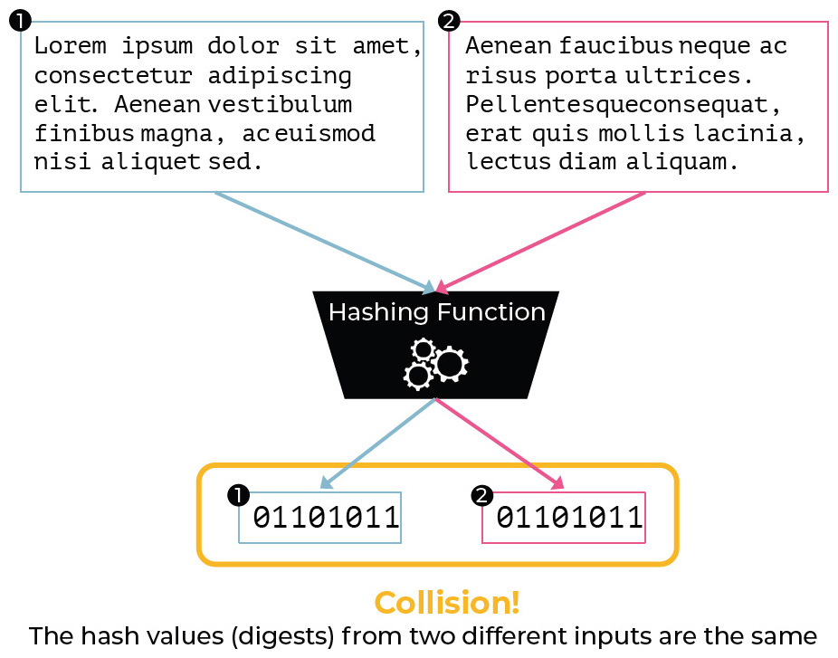
Figure 3-54: Collision Example
Birthday Attack
What's the best way to explain collisions? Something called the "birthday paradox" offers great insight.
As more people enter a room, the chance of any two people having the same birthday (same month and day of birth but not down to the year) grows exponentially. With two people, there's a 1 out of 365 chance of a match. If one more person is added, the probability rises exponentially. Every time one person is added, the probability doubles. By the time twenty-three people are in the room, there's a 50 percent chance that at least two people share the same birthday. To reach 99 percent, only 60 people need to be in the room.
This same concept and mathematics apply to attacking hashing algorithms, where the goal is to identify collisions. In other words, the goal is to find different messages that produce the exact same digest, meaning a collision is then present. This is referred to as the "birthday attack."
3.6.9 Digital Signatures
CORE CONCEPTS |
|
|
Before diving too deeply into the topic of digital signatures, it's worth thinking about why they are so beneficial and necessary. As discussed, hashing is used to provide integrity. However, attaching a hash value to some data, such as an email, that is transmitted across a network is insufficient to prove integrity. Imagine sending an important, unencrypted email across the internet and only attaching the hash digest of the message to prove the integrity of the email. Now, further, imagine that a man-in-the-middle (MITM) intercepted the email before it reached the intended recipient. After reading the message, the MITM altered the contents of the email, removed the original hash digest, calculated, and attached a new digest (based upon the altered message), and sent the email on to the original intended recipient. Upon receiving the message, the recipient would calculate the hash digest of the message, see that it matches with the attached hash digest, and falsely assume that the email has integrity.
This is a huge problem that, thankfully, can be easily resolved with digital signatures, which also provide two additional extremely useful services: authenticity and nonrepudiation.
Digital signatures provide a means by which communication between two parties can be assured to be authentic, have integrity, and be unable to be repudiated later. Specifically, digital signatures provide three services: integrity, authenticity, and nonrepudiation. More details about each service can be found in Table 3-46.
|
Integrity |
To confirm the integrity of a digital signature, the receiver calculates the hash value of the message sent by the sender and then compares this value to the hash value attached in the original message. If the two values match, the receiver knows the integrity of the message that was sent is intact. |
|
Authenticity |
Authenticity (or proof of origin) is achieved and confirmed very easily by the sending party encrypting the hash value of the message with their private key and the receiving party being able to decrypt the message with the sender's public key. As soon as the message can be successfully decrypted, authenticity has been achieved and confirmed. |
|
Nonrepudiation |
If integrity and authenticity are both achieved, nonrepudiation of origin and delivery has also been achieved. This simply means that the sender cannot deny they sent the message-the receiver knows the sender sent the message (by virtue of use of the sender's private key) and the message has not been altered in any way (by virtue of the hash values matching)-and the receiver cannot deny receiving the message. |
Table 3-46: Digital Signature Services
Creating Digital Signatures
The process of creating a digital signature is quite easy and fundamentally involves two steps as also shown in Figure 3-55:
1. The sender hashes the message, which produces a fixed length message digest.
2. The sender encrypts the hash value with the sender's private key.
Note that because a digital signature is basically just an encrypted hash value with an output of 128/192/256/512 bits, digital signatures are very small in size.
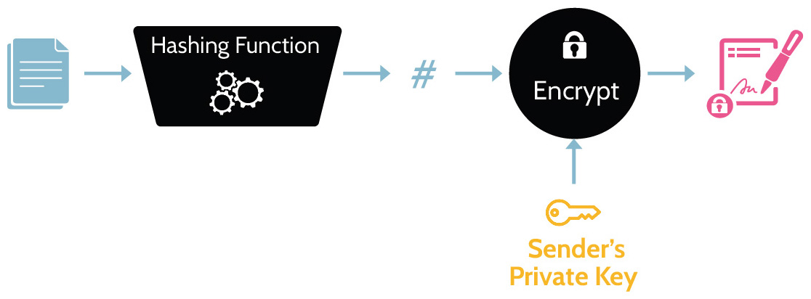
Figure 3-55: Digital Signature Creation
Using Digital Signatures
Figure 3-56 shows how Alice and Bob might use digital signatures as part of their communication in order to achieve integrity, authenticity, and nonrepudiation.
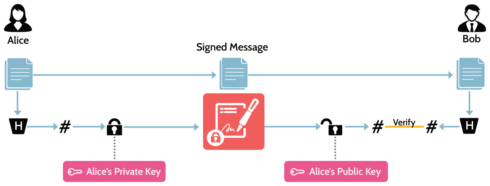
Figure 3-56: Digital Signature Creation
Alice wishes to send a message to Bob, and she desires for it to have integrity, authenticity, and nonrepudiation. To that end, she follows these steps:
1. She writes her message, and she hashes it, thus creating a fixed length message digest.
2. She encrypts the hash value (the message digest) using her private key, now producing a digital signature (similarly to what was depicted in Figure 3-55).
3. She attaches the digital signature to the email and sends it to Bob.
Do note that although Alice has produced a digital signature and sent it as part of the message to Bob, if anybody intercepts that, they'll be able to read the message. A digital signature does not provide confidentiality-anybody could potentially read the message, as that content hasn't been encrypted.
Once Bob receives the message from Alice, he needs to reverse the process by the following steps:
1. Decrypt the digital signature with Alice's public key. Once he's able to do that, authenticity has been proven. Bob knows the message came from Alice.
2. Hash the message he received (using the same hash algorithm used by Alice).
3. Compare the hash value he calculated in step #2 with the hash value received from Alice. If the values match, Bob will know that the message was not altered in transit.
With authenticity and integrity verified, nonrepudiation has also been verified. Alice cannot deny that she sent the message.
Uses of Digital Signatures
How digital signatures might be used
Digital signatures can be used in numerous ways. They are commonly used for document signing. In fact, compared to traditional signatures that can potentially be forged, a digital signature could not easily be duplicated, because this would require access to the sender's private key. These days, even a whole house can be rented just by electronically signing documents provided by the real estate agent.
Another common usage of digital signatures is code signing, which allows for the authenticity and integrity of code to be verified. For example, when downloading and installing an operating system update on an iPhone, it is important to know that the software update is from Apple (authenticity) and the update wasn't modified in transit (integrity). This can be achieved by Apple creating and attaching a digital signature to a software update. An iPhone will decrypt the digital signature attached to an Apple software update with Apple's public key-if the digital signature decrypts with Apple's public key, that proves authenticity. Next, the iPhone will hash the software update and compare the hash value generated to the hash value contained in the digital signature-if the hash values match, that proves integrity.
Another example of code signing is for a developer to generate and attach a digital signature to code they are uploading to a code repository, and thus the authenticity and integrity of code can be verified.
3.6.10 Digital Certificates
CORE CONCEPTS |
|
|
|
|
|
|
How Can We Be Certain We Have Someone's Public Key?
What does a digital certificate contain?
To confirm with certainty someone's public key, a copy of their digital certificate is needed. Digital certificates bind individuals to their public keys. The issuing Certificate Authority (CA) signs an individual certificate with the CA's private key, thereby ensuring the integrity and validity of the certificate and public key being issued.
The process of creating a digital certificate is outlined in Figure 3-57.
1. Alice generates a standardized file that contains information about herself, her company, and her public key.
2. Alice sends the file to a certificate authority, like Entrust, GoDaddy, Network Solutions, or Comodo, to name a few.
3. The certificate authority will first confirm Alice's identity and other information (thus performing identity proofing).
4. The CA will encrypt the information Alice provided with the CA's private key, which creates Alice's digital certificate.
Who can decrypt a given CA's digital certificate? Anybody who has the CA's public key can decrypt the digital certificate, and virtually every web browser and computer operating system include the public keys of the major global certificate authorities. Thus, virtually everybody can decrypt one of the big CA's digital certificates.
When exchanging public keys with others, therefore, the best practice is to do so by sending them a copy of the digital certificate that contains the public key. Doing so ensures that an attacker in the middle, even if they're able to intercept the digital certificate, can't replace the owner's public key with the attacker's public key. Only a certificate authority can modify a digital certificate, because the CA's private key is needed to do so.
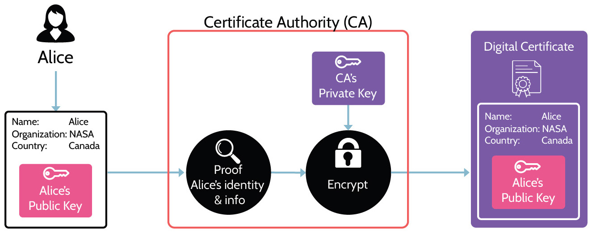
Figure 3-57: Digital Certificate Creation
X.509-Digital Certificate Standard
What is the digital certifi cate standard?
For purposes of interoperability and ease of understanding by browsers, each CA needs to create certificates that are consistent in their formats. As such, all certificate authorities conform to the X.509 certificate standard, which contains fields like certificate version, serial number, encryption algorithm, issuing CA, validity period, and public key value.
Root of Trust
Understand the relationship between root, intermediate, and issuing CAs
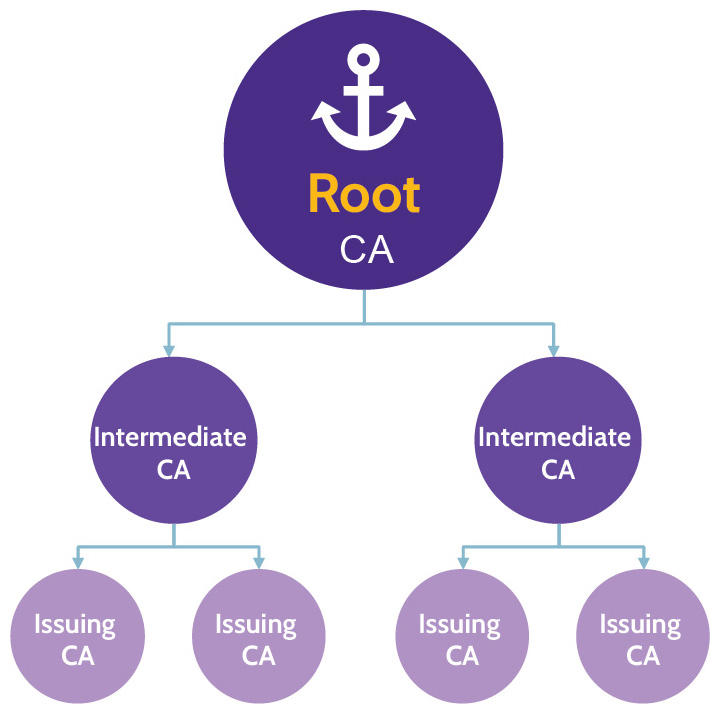
Figure 3-58: CA Hierarchy
Root of trust, or the trust anchor, is the foundation of digital certificates' integrity. In the case of every digital certificate, ultimately a root CA's key is used to sign the certificate, but oftentimes intermediary CAs (Subordinate CAs) act as proxies and sign and issue digital certificates on behalf of the root CA as seen in Figure 3-58.
From a security perspective, the reliability of the entire system is dependent on the security of the root CA's private key. If this key were ever compromised, significant and far-reaching global damage could take place, and the entire system could fall apart. The best protection against something like this is to keep the root CA offline or inaccessible and to use intermediate CAs to issue certificates.
The Root CA self-signs its certificate, and it is then used to sign subordinate certificates, usually known as intermediate CAs. Intermediate CAs can also sign certificates, shown as Issuing CAs. These issuing CAs would be the ones used to sign entity-level CAs-those used by organizations when applying for a digital certificate. If one of these CAs is compromised, then the damage can be contained by revoking only the certificates issued by them, which would be far less than those that would be signed by a root CA if it was constantly kept online.
Figure 3-59 shows an example of the root CA, or chain of trust, related to Amazon's digital certificate. That's signed by a subordinate CA (DigiCert Global CA G2), which in turn is signed by the root CA, DigiCert Global Root G2.
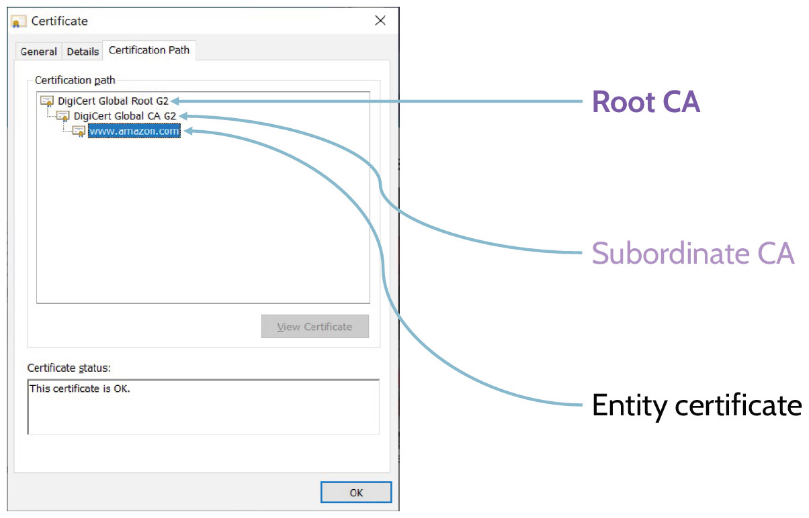
Figure 3-59: Amazon's Digital Certificate
Digital Certificate Replacement and Revocation
A best practice related to key management is periodic replacement or rotation of keys, and the same applies to management of digital certificates. If a public/private key pair is being replaced, this means that the accompanying digital certificate would also need to be replaced. As part of normal business, digital certificates are issued with an expiration date, and a given certificate should be replaced on or before the expiry date in order to maintain continuity of operations.
However, in cases where a private key may have been compromised, all trust in the associated public key should cease, and the certificate revocation process should be followed. Certificate revocation involves contacting the issuing CA, explaining the situation, and asking that the digital certificate associated with the key pair be revoked.
Of the two situations, revocation is much worse, because it implies that a private key has been compromised and nobody should trust the public key.
Digital certificate replacement and revocation are summarized in Table 3-47.
|
Replacement |
Revocation |
|
Regular replacement of expired certificates |
Replacement of certificate when associated private key has been compromised |
Table 3-47: Digital Certificate Replacement and Revocation
Revocation Confirmation Methods
Understand how the revocation status of a certificate can be checked and the difference between CRL and OCSP
Continuing the discussion from above, once a digital certificate has been revoked by a CA, there are two primary ways to confirm the revocation. The older method for checking involves what's known as the Certificate Revocation List (CRL). In this case, an organization would contact a CA and ask if a particular certificate has been revoked. In turn, the CA would send the organization a list of all revoked certificates from the CA. This list can be quite extensive. Once received, the organization's cryptosystem would search the entire list to determine if the certificate in question has, in fact, been revoked. This is not an efficient process, as it requires a large volume of data to be often transmitted to be able to identify revoked certificates.
The better, newer method involves Online Certificate Status Protocol (OCSP). With this method, an organization's system will query the CA, asking if a particular certificate has been revoked, and the CA will reply with a simple yes or no.
This said, even when a certificate has been revoked and a browser indicates the same, users will oftentimes ignore warnings and proceed to a website that may be malicious or compromised. User awareness is still a key component of protecting an organization.
CRL and OCSP are summarized in Table 3-48.
|
Certificate Revocation List (CRL) |
Online Certificate Status Protocol (OCSP) |
|
Client downloads and searches list of serial numbers of all revoked certificates from the CA |
Client queries CA for revocation status of specific certificate serial number |
Table 3-48: Revocation Confirmation Methods
Certificate Life Cycle
A certificate's life cycle includes a number of distinct phases presented in Table 3-49.
|
Enrollment |
To be issued a digital certificate, an entity must first submit a request for certificate to a certificate authority (CA). This request is usually in the form of a CSR, or certificate signing request, that requires certain identifying fields to be completed for the process to move forward. As part of this process, the requesting entity also generates a public/private key pair. The private key is usually stored in the entity's local certificate store, and the public key is included as part of the CSR. |
|
Issuance |
Upon receiving a valid CSR, a registration authority follows a process known as identity proofing, where the validity of information included in the entity's CSR is confirmed. This process is typically quite thorough, as the CA wants to ensure the legitimacy of the entity requesting the certificate. After completing this process, the CSR will be effectively signed by the root of trust (root CA) private key, following the X.509 standard, and the certificate will be issued by an intermediate/issuing CA. Upon issuance, the entity will store the digital certificate in their certificate store. |
|
Validation |
When a certificate is invoked, as part of web browsing or ecommerce transactions, the validity of the certificate is typically automatically confirmed with the issuing CA. This process specifically confirms if a certificate has been revoked or is expired, and if either case exists, a warning is issued, and many browsers today will block access to a website or prevent the transaction from proceeding. Validity of a certificate can also be performed manually by checking the CA's certificate revocation list (CRL), a list of digital certificates that have been revoked by the issuing CA) or by using the online certificate status protocol (OCSP), an internet protocol that enables automated lookup of the status of an issuing CA's digital certificates. |
|
Revocation |
For any of a number of reasons, a certificate might become invalid and need to be revoked. For example, through improper key management or malicious activity, an entity's private key might become compromised, or the enrollment process could involve incorrect validation of information and issuance. In cases like these and others, a certificate will be revoked and added to the issuing CA's revocation list, which can be queried to verify a certificate. |
|
Renewal |
All certificates are issued with an expiration date, typically in increments of twelve months from the time of issuance. Prior to expiration, an entity will receive a notice of expiration, at which time the entity can renew the certificate. If an expiration date passes, a warning will be issued to any users who visit the site where the expired certificate is in use. Relative to issuance, renewal of a certificate is a relatively simple process that typically involves confirming the information included as part of the original CSR. |
Table 3-49: Certificate's Life Cycle
Certificate Pinning
What is certificate pinning?
When a user visits a website, like example.com, the web server sends the server's certificate to the browser by virtue of the browser requesting it. However, if a malicious actor is sitting between the web server and the user, the malicious actor might send a spoofed certificate to the user when the browser makes the request. Certificate pinning offers a means by which this possibility can be avoided.
With certificate pinning, when a certificate from a web server is trusted, each subsequent visit to the site does not include a request for a new copy of the certificate. There are two primary ways to accomplish certificate pinning:
1. When an application is first created, by coding the certificate into the application itself. Thus, if the certificate is already pinned to the application, there is no need to request a copy of the certificate from the server.
2. The very first time a website is visited, the certificate obtained from the initial request is pinned to the browser, and no subsequent requests are required during future visits to the same site.
Fundamentally, certificate pinning involves no key distribution and thus alleviates any concerns relating to it.
3.6.11 Public Key Infrastructure
CORE CONCEPTS |
|
|
|
|
Understand the major components of PKI and the certificate life cycle
Public key infrastructure (PKI) is the entire suite of technology systems that allows keys to be distributed and owners of public keys to be verified.
Figure 3-60 highlights the major components of PKI, which have also been summarized in Table 3-50.
In the left pane, you see Alice, who desires to have her own public and private key pair. She generates this pair of keys using an application on her computer and stores them in her machine's certificate store. It's especially important that her private key be kept very secure, because Alice is the only person who should ever have access to it. Looking at the lower right pane, we see Bob as the relying party with whom Alice wants to communicate. To communicate with Bob, Alice must send him her public key. However, if she simply sends her public key, there's a risk: her key could be intercepted and replaced with an attacker's public key. Instead, Alice will send her digital certificate.
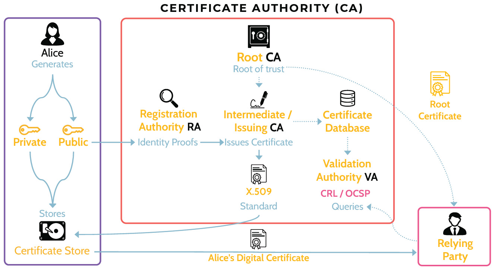
Figure 3-60: PKI Operation
To obtain a digital certificate that contains her public key, Alice must utilize a certificate authority (CA). A Registration Authority (RA) will ask Alice for some identifying information as well as a copy of her public key and it will "identity proof" Alice to confirm she is, in fact, Alice. After this step, Alice's public key will be signed by the root CA's private key. The root CA is known as the root of trust, but the signing process is usually facilitated through an intermediary known as the intermediate or issuing CA. Once signed, the intermediate/issuing CA issues the certificate.
Once issued, Alice can store a copy of the certificate in her Certificate Store, and she can send a copy of the certificate to Bob. As time passes, Bob might want to confirm that Alice's certificate is still valid or learn if it's been revoked. To do this, Bob can query the Validation Authority (VA) entity of the certificate authority via one of two prementioned protocols, CRL or OCSP. Each certificated authority maintains a large database, known as the Certificate Database, of all the certificates they have issued, and which have been revoked.
Finally, for Bob to decrypt Alice's certificate, he's going to need the root CA's public key (which can be obtained from the root CA's certificate), which is typically preinstalled in commonly used operating systems and web browsers.
|
Certificate Authority (CA) |
Root of trust |
|
Registration Authority (RA) |
Identity proofs on behalf of CA |
|
Intermediate / Issuing CA |
Issues certificates on behalf of CA |
|
Certificate DB |
List of certificates issued by CA and revocation list |
|
Certificate Store |
Repository of certificates and user's private key on user's computer |
Table 3-50: PKI Components
Note that without a PKI it is still possible to encrypt and send data, but you cannot verify the identities of the other participating parties. In other words, without a PKI, it's impossible to entirely trust the digital identity of another entity or person.
3.6.12 Key Management
CORE CONCEPTS |
|
|
|
As already mentioned, key management is incredibly important. If a key is secure, the underlying cryptographic system is secure. In other words, an attacker can know the ciphertext, the algorithm, the IV, and everything else about the system, and if the key remains secure, the system is secure. This concept was formalized by Auguste Kerckhoffs, a Dutch cryptographer, in the nineteenth century and is known as Kerckhoffs' principle.
Kerckhoffs' Principle
Understand key management activities
Kerckhoffs' principle states that a cryptosystem should be secure even if everything about the system, except the key, is public knowledge.
Table 3-51 contains numerous key management activities, which are also explained in more detail later.
|
Key Creation / Generation |
The key generation/creation process includes the following attributes::
|
|
Key Distribution |
Key distribution is the practice of securely distributing keys. Methods used could include:
|
|
Key Storage |
Key storage is one of the most critical-if not the most critical-aspects of securing a cryptographic system. Two types of systems are utilized for key storage:
|
|
Key Change / Rotation |
Key change/rotation refers to how often encryption keys should be replaced. |
|
Key Destruction / Disposition |
Key disposition refers to how keys are handled, especially in instances where data in the cloud is concerned. Two primary methods of key disposition/destruction are most often used:
|
|
Key Recovery |
Key recovery refers to techniques used to recover a key. Three primary techniques exist: split-knowledge, dual control, and key escrow. |
Table 3-51: Key Management Activities
Key Creation/Generation
Key creation/generation focuses on creating keys. Ideally, this process should be fully automated. In other words, people should not attempt to generate their own keys in order to avoid a significant weakness: patterns. Humans are not very adept at creating true randomness, and anything that contains patterns in cryptography is prone to being deciphered very quickly. Thus, the use of computer systems can help avoid this issue, though even computer systems use what are known as pseudorandom number generators, which are not truly random numbers. However, for purposes of cryptography, a pseudo randomly generated number will not likely demonstrate a pattern for too many years to count.
In addition to utilizing an automated key creation process, keys should be randomly chosen from the entire key space. For example, DES has a key of 56 bits, which gives it a key space of (256) or approximately 72 quadrillion keys. When choosing a key from that space, it should be chosen in a truly random manner instead of in order of creation or incrementally.
Key Distribution
After keys have been generated, they need to be distributed, and two primary methods of key distribution exist: out-of-band and key wrapping.
Out-of-band refers to the practice of using a different way to communicate the key than the method being utilized to exchange messages. In other words, if people are communicating via the internet, out-of-band could be any of the following, to name a few examples:
in person
phone call
letter
Key wrapping, better known as key encryption keys (KEK), operates just as the name suggests. A key is "wrapped" inside another key. For example, imagine two people (Amanda and John) know they'll be communicating quite a bit over the course of a week, and they want to use a symmetric key to encrypt their communications. Additionally, for extra security, they want to change the symmetric key every hour. Obviously, many keys will be required to meet this requirement. Something like Diffie-Hellman Key Exchange could be used to share the keys, but this would require quite a bit of work. A better solution would be to generate the number of keys needed, about two hundred for this example so extra keys are also available, and then use Diffie-Hellman to generate the same symmetric key on each side. Then this one symmetric key can be used to "wrap" and exchange the two hundred keys. This is key wrapping-many keys are encrypted with another key.
Key Storage
By now, it should be clear that key storage is one of the most critical-if not the most critical-aspects of securing a cryptographic system. Two types of systems are utilized for key storage: the Trusted Platform Module (TPM) and Hardware Security Module (HSM). Table 3-52 summarizes their characteristics.
|
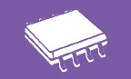 Trusted Platform Module (TPM) |
A TPM is a tiny microchip installed on the motherboard of laptops and servers that stores encryption keys for the system on which it is installed. In other words, a given system's certificate store is storing the keys in the TPM module. This is important, especially as it relates to full drive encryption, which means the entire hard drive is encrypted. If the keys were stored on the hard drive and somebody stole the drive, they would have access to the ciphertext-the encrypted hard drive-as well as the key to decrypt it. This explains why a TPM module is installed on the motherboard and essentially operates as a self-contained unit for the sake of cryptographic operations related to the device on which it is installed. To summarize, a TPM is a secure computer chip (crypto processor) built into machines (e.g., laptops), which stores encryption keys and certificates. |
|
Hardware Security Module (HSM) |
Unlike a TPM, which stores encryption keys for a single device, a Hardware Security Module (HSM) stores encryption keys for an entire organization. An HSM essentially looks like a server and is connected to a network, though it is a very hardened device. It's locked down so tightly because its sole purpose is to generate and store encryption keys for an organization. To summarize, a HSM is a physical device, typically connected to an organization's network, specifically built to securely store and manage encryption keys for the organization. |
Table 3-52: Key Storage Techniques
Key Rotation
The concept of key rotation refers to how often encryption keys should be replaced. The value of the asset is what commonly dictates the frequency of key rotation. The more valuable the asset, the more frequently the key should be rotated.
Key Recovery
There are three main methods to perform key recovery as noted in Table 3-53.
|
Split Knowledge |
Could be as simple as writing the key out on a piece of paper, cutting the paper in half, or into thirds, and then giving the other pieces to other people. Knowledge of the key is split among two or more parties. |
|
Dual Control |
Imagine a scenario that involves a nuclear missile. To launch it, two keys must be turned at the same time. Have you ever seen Crimson Tide? Both the submarine captain and the executive officer needed to turn their launch keys for a missile launch to take place. So, there's at least two different controls that must happen at the same time. With encryption keys, this is often implemented using tiny vaults. The backup encryption keys are stored in a vault, which can only be unlocked via the presence of two individuals. This is a form of dual control |
|
Key Escrow |
The term escrow refers to a trusted third party, usually in the context of significant financial transactions. Anyone who has bought or sold a house has likely dealt with escrow, because the seller doesn't want to give the keys to the buyer until money is in the bank, and the buyer doesn't want to give the money until the keys are in hand. So, a trusted third-party acts on behalf of both parties and accepts the keys and the money on behalf of each party. Once in possession of both, it hands the keys to the buyer and the money to the seller. Key escrow means encryption keys are stored with a trusted third party. It's very commonly used with cloud computing. In some countries, encryption keys must be shared with the government in order to conduct business there. |
Table 3-53: Key Recovery Methods
Key Disposition
Key disposition, or key destruction, is a very important matter. Let's examine this in the context of cloud, where data is actually stored across multiple servers and hard drives. Imagine that some of this data is sensitive, like PII. Now imagine that the organization storing this data desires to move to a different cloud service provider. After moving the data, say, from AWS to Azure, privacy laws dictate that the data previously stored on AWS must be securely destroyed. Secure destruction means the organization can prove the data has, in fact, been removed from AWS. The best way to securely destroy data is to physically destroy the media used to store the data. This points to things like shredding, melting, or otherwise rendering every part of a hard drive unusable.
However, in this case, simply asking Amazon to delete the data is not enough. You can't be sure the vendor will do that, especially when other customers have data on those same hard drives and that data is likely spread across numerous drives.
Crypto shredding is another key disposition method that can be used, especially if the data is stored in the cloud. You can choose a strong encryption algorithm and encrypt that data and then destroy the key, which would mean that the data is effectively destroyed. Nobody can read it, because it's been strongly encrypted, and the decryption key has been destroyed.
3.6.13 S/MIME
CORE CONCEPTS |
|
|
Secure/Multipurpose Internet Mail Extensions-better known as S/MIME, is a standard for public key encryption and provides a number of security services for digital messaging applications. Basic security services offered by S/MIME are:
Authentication
Nonrepudiation of origin
Message integrity
Confidentiality
S/MIME also offers optional security services, including:
Signed receipts
Security labels
Secure mailing lists
Extended method of identifying the signer's certificate(s)
Understand the basic differences between MIME and S/MIME and the services S/MIME provides
S/MIME's popularity grew out of necessity, as internet email has evolved from a simple platform capable of handling text-based messages to a much more complex platform capable of handling digital images, files, sound clips, and other forms of multimedia. This evolution of internet email technology coincided with a shift in design and use, from a relatively small community of trusted colleagues at universities and government agencies to the global community. Due to the nature of internet email usage during the early years, the need for security was minimal, and it was not designed into solutions.
As usage expanded to include millions of users around the world as well as different types of digital information beyond simple text-based messages, Multipurpose Internet Mail Extensions (MIME) was employed. MIME does not address security issues, but security features were developed and added to MIME to create S/MIME.
S/MIME adds features to email messaging, including:
Digital signatures for authentication of sender
Encryption for message privacy
Hashing for message integrity and nonrepudiation of origin
To use these features, a public key infrastructure (PKI) must be in use to support senders and recipients of S/MIME messages.
Putting it All Together
Let's now walk through an example that shows all five services of cryptography in use and demonstrates where it's best to use symmetric cryptography vs. asymmetric cryptography, and digital signatures vs. digital certificates. In this example, Alice and Bob have never communicated before, and Alice wants to send a very large file to Bob. In sending this file, Alice wants to achieve:
Confidentiality,
Integrity,
Authenticity (Proof of Origin),
Nonrepudiation of origin and nonrepudiation of delivery,
and Access control
Step 1. Alice and Bob need a copy of each other's public keys. But recall, they can't just send each other their public keys, because they couldn't verify they had received each other's public key. Therefore, the first thing Alice and Bob exchange are their digital certificates to give each other a verifiable copy of their public key, as depicted in Figure 3-61.
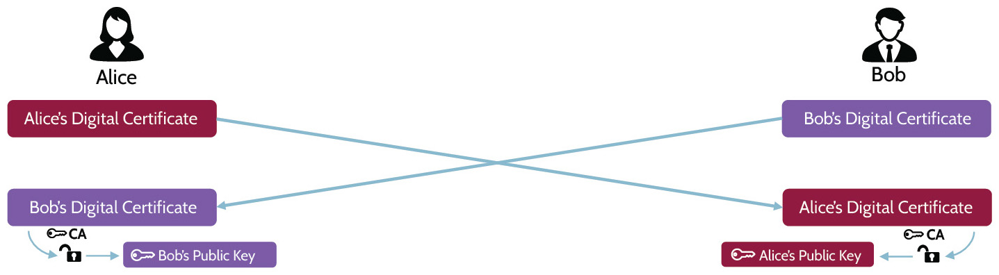
Figure 3-61: Verifying Public Keys
Step 2. Alice wants to send a very large document to Bob, and she wants it to remain confidential. Thus, she needs to encrypt the file, and because it is a very large file, she needs to use a fast and efficient encryption method. Symmetric key cryptography provides the solution. She needs to encrypt the file using a symmetric encryption algorithm, such as AES. She now faces the Achilles' heel of symmetric algorithms: key distribution. She needs to somehow securely transmit a symmetric encryption key to Bob.
Alice selects a symmetric encryption algorithm and generates a symmetric encryption key. To send this symmetric encryption key with confidentiality to Bob, she encrypts the symmetric key with Bob's public key. This ensures that only Bob's private key can be used to decrypt the copy of the symmetric key and solves the problem of key distribution. Alice can send the encrypted symmetric key to Bob, and the only person in the world that should be able to decrypt is Bob with his private key, as depicted in Figure 3-62.
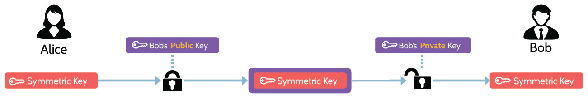
Figure 3-62: Symmetric Key Distribution
Step 3. Alice can now encrypt the file with the symmetric algorithm she selected-the same symmetric key she sent to Bob. Encrypting the plaintext of the file generates a large file of ciphertext that Alice sends to Bob. Bob can then decrypt the file using the symmetric encryption key he received from Alice in Step 2, as depicted in Figure 3-63.
By encrypting the file and sending Bob the ciphertext and the symmetric key in Step 2, Alice has achieved two services of cryptography here in Step 3:
1. Confidentiality: the large file was sent encrypted, thus providing confidentiality
2. Access control: By Alice choosing who she sends the symmetric key to and the ciphertext, she can control who can decrypt and thus access the file. This is a form of access control as she is allowing Bob to access the encrypted large file.
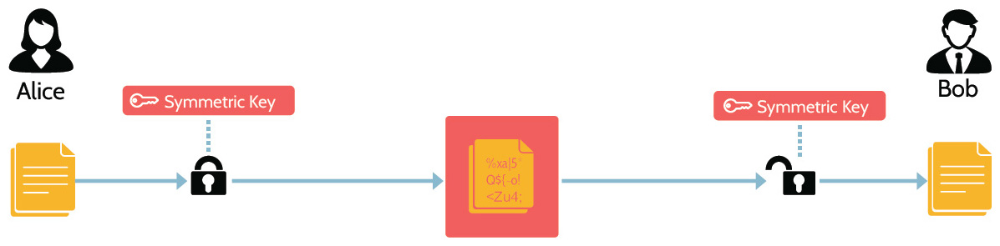
Figure 3-63: Symmetric Encryption and Decryption
Step 4. Alice also wants Bob to be able to verify the integrity and authenticity of the file, and she wants nonrepudiation of origin. To achieve these three services, Alice needs to generate a digital signature for the file. To accomplish this, she first hashes the file and encrypts this hash value with her private key, thus generating her digital signature for the file. Next, she sends her digital signature to Bob. Upon receiving Alice's digital signature, he needs to decrypt it with Alice's public key. If Alice's digital signature decrypts with her public key, that proves authenticity, otherwise referred to as "proof of origin." Only Alice could have created her digital signature with her private key, and this proves it came from her.
When Bob decrypts Alice's digital signature, he gets a copy of the hash value that Alice generated for the file. Bob now needs to hash the file that he received and compare the hash value from Alice's digital signature to the hash value that he just calculated. If they match, that proves integrity. Bob now knows he received exactly the same file that Alice sent.
Additionally, Bob now has nonrepudiation of origin for the file-Alice cannot deny she sent the file. Bob knows the file came from Alice via the authenticity, and he knows it was exactly the file Alice sent via the integrity and thus nonrepudiation of origin, as depicted in Figure 3-64.
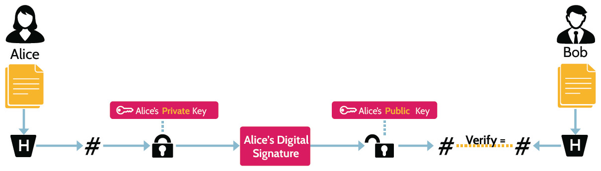
Figure 3-64: Alice's Digital Signature
Step 5. The final cryptographic service that Alice wants to achieve is nonrepudiation of delivery. She wants to know that Bob received exactly the file she sent, and she doesn't want him to be able to deny that he received the exact same file. To achieve nonrepudiation of delivery, Bob will need to create and send his own digital signature for the file back to Alice. To create his digital signature, Bob encrypts the hash value for the file he calculated in Step 4 with his private key. He then sends his digital signature to Alice. Alice decrypts Bob's digital signature with Bob's public key and gets a copy of the hash value that Bob generated for the file. If Bob's digital signature decrypts with his public key, that proves authenticity (proof of origin)-Alice knows the digital signature came from Bob. The final step is for Alice to compare the hash value from Bob with the hash value for the file she calculated in Step 4. If the hash values match, then she knows Bob received exactly the same file she sent-nonrepudiation of delivery, as depicted in Figure 3-65.
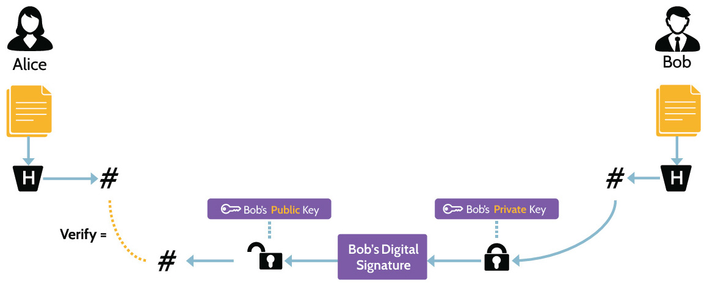
Figure 3-65: Bob's Digital Signature
Figure 3-66 illustrates all these steps together to achieve all five services of cryptography: confidentiality, integrity, authenticity (also referred to as proof or origin), nonrepudiation (of origin and delivery), and access control.
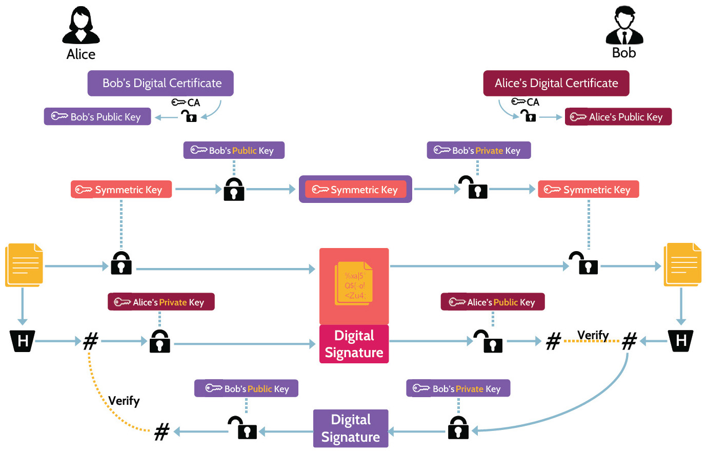
Figure 3-66: Five Services of Cryptography Depicted
3.7 Understand methods of cryptanalytic attacks
3.7.1 Cryptanalysis
CORE CONCEPTS |
|
|
|
Cryptanalysis is the science of:
Cracking codes
Decoding secrets
Breaking cryptographic protocols
Finding and correcting weaknesses in encryption algorithms
Finding or deducing the key
Two main types of cryptanalysis attacks can be defined, as also summarized in Table 3-54, which are going to be analyzed later.
|
Cryptanalytic Attacks |
Cryptographic Attacks |
|
|
|
Table 3-54: Cryptanalysis Attack Types
3.7.2 Cryptanalytic Attacks Overview
CORE CONCEPTS |
|
|
|
|
|
What is the primary goal of cryptanalytic attacks?
The primary goal of any cryptanalytic attack is to determine the encryption key.
Brute-Force Attack
Brute-force attacks are quite simple. The attacker tries every possible key until the correct key is identified. While simple to execute, brute-force attacks are not very effective, because any key length of a reasonable size will increase the attack time exponentially. Table 3-55 illustrates this concept. For clarity, the term key length also refers to the number of bits in a key; so, key length = bits. Similarly, the term key space also refers to the number of keys available, based upon the key length; so, key space = number of keys available.
The attack times noted in the table apply to a system built in 1999 at a cost of $250,000. The system was called "Deep Crack" and was developed to break DES. Modern computing technology and capabilities would reduce the attack time for a 56-bit length key to minutes and the other key lengths to a fraction of the years required by Deep Crack, but even then, the attack times would not decrease enough to make a significant difference.
|
Key Length |
Key Space |
Attack Time |
|
56 |
7.2 x 1016 |
20 hours |
|
80 |
1.2 x 1024 |
54,800 years |
|
128 |
3.4 x 1038 |
1.5 x 1019 years |
|
256 |
1.15 x 1077 |
5.2 x 1057 years |
Table 3-55: Brute-Force Time Relative to Key Lengths
Additional Cryptanalytic Attacks
Understand the different cryptanalytic attacks
Because even with modern computers certain key lengths would require too many years to successfully brute-force, other ways to determine the key can be utilized. A comparison of the most common cryptanalytic attacks can be found in Table 3-56.
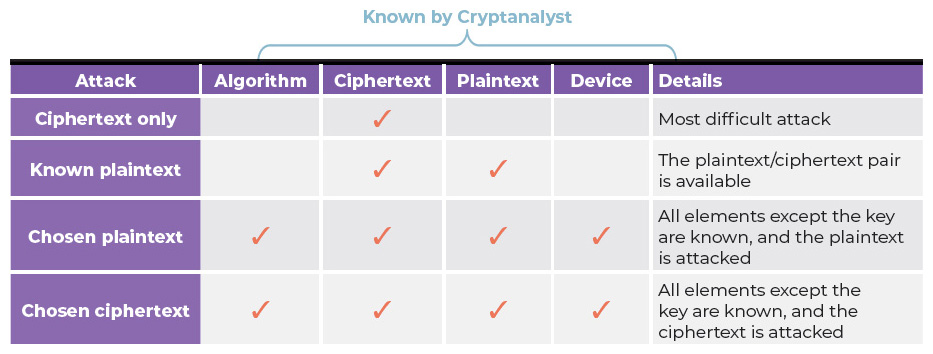
Table 3-56: Cryptanalytic Attack Comparison
From the four types of attacks in Table 3-56, some may be more effective than others. A ciphertext-only attack is the most difficult, because the attacker ONLY has access to the ciphertext. In other words, the attacker has no real way to determine the actual plaintext except through enormous and timely effort.
With a known-plaintext attack, the attacker has access to both the ciphertext and plaintext, and both sources of information can be used to determine the key. More importantly, once the key is determined, two things can happen. One, other pieces of ciphertext can be easily decoded, and two, the key can be used to forge messages.
By far, the easiest cryptanalytic attacks are chosen plaintext and chosen ciphertext. In each case, everything except the key is known, which makes determining it much easier. In the case of a chosen-plaintext attack, the attacker can feed plaintext into the device and examine the resulting ciphertext to determine the key; in the case of a chosen-ciphertext attack, the opposite happens, and ciphertext is fed into the machine with the resulting plaintext being scrutinized. It's important to note that even with access to a device and the algorithm, the actual key must still be deduced through examination of the resulting outputs.
In addition to the attack types noted above, other attacks exist, like:
Linear and differential cryptanalysis
Both types of attacks use complicated math to deduce the key. In each case, multiple iterations of the attack are conducted to determine probability values of a given key being the key used for encryption. Differential cryptanalysis employs a form of chosen-plaintext attack, while linear cryptanalysis uses a known-plaintext attack approach.
Factoring cryptanalysis
In this attack, the attacker is trying to factor a very large number to determine the private key. In other words, the equation used to create the key is fairly easy to perform in one direction-multiplying two very large prime numbers together-but the reverse is not true; going from the very large number to the two original numbers is virtually impossible and could likely only be accomplished over a very long period of time. This type of attack is specifically focused on the RSA algorithm, which uses factoring as the underlying hard math problem.
3.7.3 Cryptographic Attacks
CORE CONCEPTS |
|
|
As noted above, the goal of cryptanalytic attacks is to deduce the key. With cryptographic attacks, the same is not always true, as will be discussed in the various cryptographic attacks noted in the rest of this section.
Man-in-the-Middle Attack
Understand the different cryptographic attacks and key characteristics of each
In this attack, denoted in Figure 3-67, the attacker pretends to be both parties in relation to the communication. The attacker places themselves in the middle of the conversation between Alice and Bob. When Alice sends a message to Bob, she's really communicating with the attacker, who will respond and act as if he's Bob; likewise, if Bob initiates the communication, the attacker will pretend to be Alice. Via this type of attack, the attacker can control the flow of information very carefully and potentially learn valuable information that can be used in other attacks.
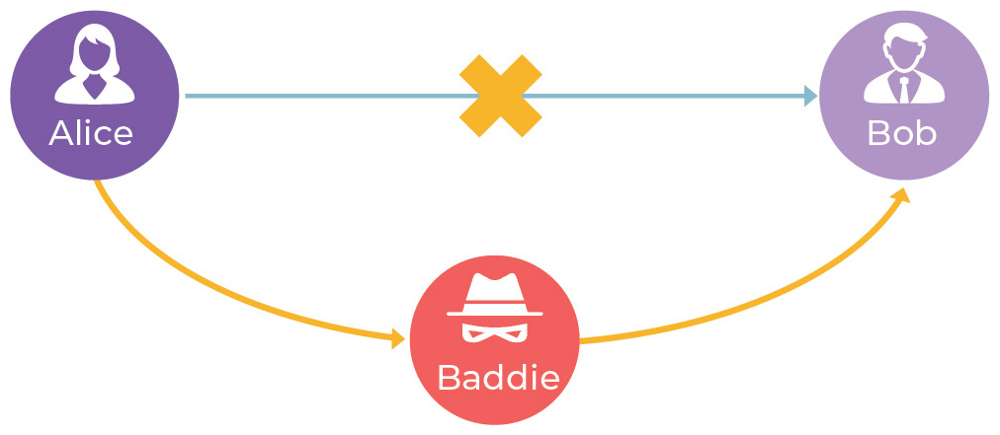
Figure 3-67: Man-in-the-Middle Attack
Replay Attack
A replay attack, also presented in Figure 3-68, is like a man-in-the-middle attack, as the attacker is again able to monitor traffic flowing between two or more parties. However, this time the attacker aims at capturing useful information (like session identification details or authentication information) and then "replaying" it later to gain access to a target system. An example of that can be when a user logs into a system, and the password is hashed for security purposes; so, the username and hashed password are sent across the network, and if the hashed password matches what is stored in the system, the user will be successfully authenticated, commonly establishing a session with a specific identifier.
An attacker performing a replay attack can obtain a copy of that session identifier as it was communicated via the network and try to replay it to the server to denote the legitimate user.
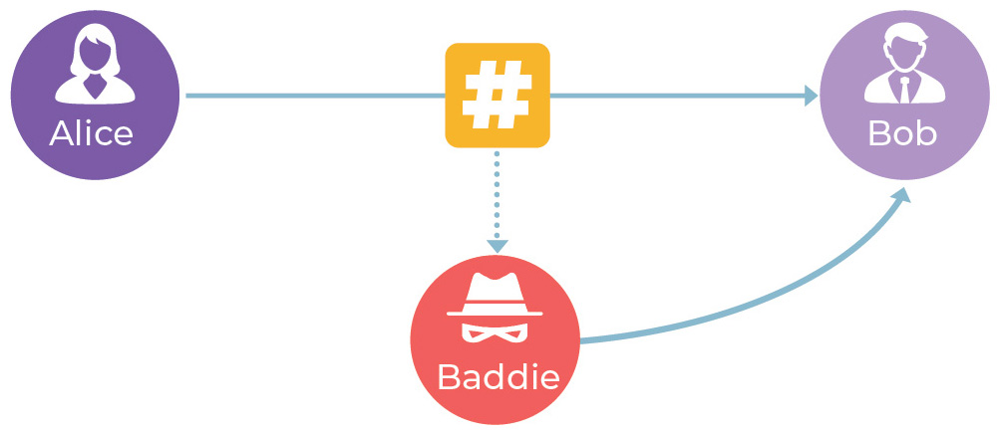
Figure 3-68: Replay Attack
Pass-the-Hash Attack
The goal of the attacker during this attack is to gain access to valid password hashes that can then be used to bypass standard authentication steps and authenticate to a system as a legitimate user. Since the attacker doesn't know a valid password for a user, they can try to intercept the password hash and then, instead of brute forcing that to try and obtain a password, they can present the hash to a target resource in the hope that it will be tricked into thinking that the attacker is the legitimate user to which this hashed password relates.
Temporary Files Attack
For any decryption or encryption activity to take place on a system, certain things must be present on the system, like the plaintext or ciphertext, as well as the algorithm and the encryption/decryption key. During the encryption or decryption process, the key might be obtained from a secure storage area and temporarily stored in RAM or another volatile memory location to facilitate quick decryption/encryption calculations. At this point, if an attacker can gain access to the system, they might be able to read the memory space and gain access to the key, which could then be used for much broader purposes.
Implementation Attack
Implementation attacks focus on an inherent weakness in how an algorithm is implemented rather than a weakness with the algorithm itself. An example of this is WEP, which is fundamentally broken. The algorithm underpinning WEP-RC4-is actually a great algorithm, but in the case of WEP, RC4 is implemented very poorly. Specifically, there is a problem with the initialization vector (IV), among other things, that allows RC4 to be cracked very easily and quickly. The IVs used are too short, and due to that, they're repeated too often.
So the issue is not the algorithm itself, but rather the way the algorithm is implemented, which makes WEP inherently insecure.
Side-Channel Attack
Side-channel attacks are very sophisticated attacks and are therefore only used by equally sophisticated organizations, like intelligence agencies, advanced persistent threat groups, and security researchers.
With a side-channel attack, the target is not the system or the algorithm itself. Rather, using complex tools, a system's operations can be monitored and measured. Based upon these observations and measurements of items like timing (the length of time to perform an activity), power used (how much power is consumed during an activity), and radiation emissions (emissions made by all devices and systems), significant insight can be gleaned.
Table 3-57 summarizes the different types of side-channel attacks.
|
Timing |
Radiation Emissions |
Power |
|
Focuses on the length of time of an activity |
Focuses on the emissions made by all devices and systems |
Focuses on how much power is consumed during an activity |
Table 3-57: Side-Channel Attacks
Dictionary Attack
The goal of a dictionary attack is to determine somebody's password. Rather than trying every possible combination of letters and numbers, an attacker will utilize a much more efficient method and try the most likely possibilities/combinations of words to determine a password. In the past, actual dictionaries were used. Now, these attacks can be enhanced by using databases of leaked passwords that exist and are available on the internet as the result of past breaches.
Rainbow Tables
Passwords should never be stored as plaintext in a system database. Rather, the hashed value of the password should be stored, so in case of a system breach, an attacker would only have hashed values instead of actual passwords. From the perspective of an attacker, a rainbow table anticipates such a situation and is a precomputed table of hash values, based upon the most popular passwords used in the world and the most popular hashing algorithms.
Essentially, a rainbow table is a big database that contains passwords and hash values, and it can be used to quickly determine specific hash values used for authentication. An attacker can steal a password file (which contains hashed passwords) and use the rainbow table to identify matches of those hashed representations.
Reducing the Risk of Rainbow Tables
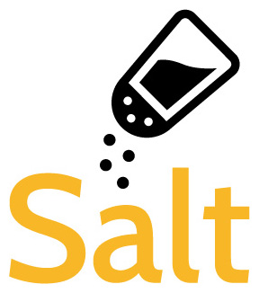
The best way to reduce the risk related to rainbow table attacks is to use what's known as "salt." Salt is a random value appended to a password, which is then hashed. A rainbow table attack will not work against a database that has been salted because now instead of just the password being hashed, there's a random string appended to it before hashing takes place. This also has the added advantage that it doesn't allow the attacker to identify two users who have the same password. If both Alice and Bob set a password of "password123," then a random salt will be appended to each password before getting hashes, thus resulting in two totally unrelated hashing representations. Each user is assigned their own unique random salt value.
Peppers serve a similar purpose as salts, but instead of having a unique random value for each user, the same pepper (the same random value) is used for all users in a system. Salts are therefore considered to be more secure than peppers.
Birthday Attack
A birthday attack is used to identify collisions in hashing algorithms. Remember the birthday paradox statistics mentioned earlier, denoting that in a group of twenty-three people there's 50 percent chance of two of them having the same day and month of birth. That fact could represent a collision. Collisions, hashing, integrity, and birthday attacks typically point to each other.
Social Engineering
In addition to the more tech-centric attacks noted above, social engineering attacks can be used to obtain a cryptographic key as well. Two such attacks are: purchase key attack (bribing someone to obtain a copy of the key) and rubber hose attack (use of duress or torture to obtain the key).
Kerberos Attacks
Kerberos exploitations may take on several different forms, and each involves a password hash related to specific elements of Kerberos. One such exploitation is actually an extension of the pass the hash attack noted above. In this case, after an attacker uses a stolen password hash to authenticate as a legitimate user, the password hash is then used to create a valid Kerberos ticket.
Other Kerberos attacks involve what are known as golden and silver tickets. In the former case, an intruder who can obtain the KRBTGT account password hash has access to what's known as a golden ticket. The KRBTGT account is the Kerberos Key Distribution Center (KDC) service account and is responsible for encrypting and signing all Kerberos tickets. Through this access, an intruder can forge ticket granting tickets (TGT), which means any account in the active directory can be exploited. With a golden ticket and through interaction with the KDC, an intruder can request ticket granting service (TGS) tickets, which give access to system-specific resources, like a SQL server or an application server.
The latter case involves the forging of Kerberos TGS tickets, by virtue of an attacker gaining access to the password hash of a target service account, for example, for a service like SharePoint, MSSQL, and so on. In this context, TGS tickets are known as silver tickets, because the scope of access is limited compared to the access of a golden ticket-the KRBTGT service account password hash. Silver tickets only allow for access to a particular resource, including the host system. However, the ability to forge silver tickets also means that an attacker can create TGS tickets undetected, because interaction with the KDC is not required.
Ransomware Attack
Ransomware exploits have grown significantly in recent years, and one reason has been the corresponding growth in popularity of cryptocurrency. By nature, cryptocurrency is shrouded in secrecy, which aligns perfectly with the goal of actors involved in ransomware attacks-to remain anonymous or untraceable. Ransomware actors could be acting on behalf of nation-states or simply cybercriminals seeking to enrich themselves, and the target of attack could be anything from critical infrastructure to valuable intellectual property, and anything in between that could lead to a significant ransom being paid. When victim files are encrypted, sadly even paying the ransom doesn't guarantee the victim will get access, as that totally depends on the attacker's whim. Also, sometimes the file decryption may not work, which means that file access can't be restored. Lastly, various victim companies hire third parties to negotiate ransom and get file access back for them or work with law enforcement and security companies to see if they can identify any encryption vulnerabilities that would allow them to identify the encryption key and obtain their coveted files.
Fault Injection Attack
Fault injection is a technique that can be used to determine where vulnerabilities might exist. Typically, fault injection involves deliberately injecting a fault into hardware or software to modify its normal behavior, which then allows identified vulnerabilities to be corrected. Fault injection is often used during hardware and software testing. With a fault injection attack (FIA), however, an attacker is attempting to change normal behavior in order to exploit something, for example, an access control mechanism. Fault injection attacks are sometimes used in conjunction with side-channel attacks (like a differential power analysis) where the fault injection attack can be used to reduce countermeasures, and then the differential power analysis attack can take place.
3.8 Apply security principles to site and facility design
3.8.1 Intro to Physical Security
CORE CONCEPTS |
|
|
|
|
Goals of Physical Security
Physical security, like logical security, ultimately focuses on increasing the value of an organization by providing protection from outside the perimeter to all assets within, including protection related to confidentiality, availability, and integrity as depicted in Figure 3-69. For example, let's consider availability. Physical security is responsible for things like ensuring that the building's temperature is consistent and that there is a good clean supply of electricity.
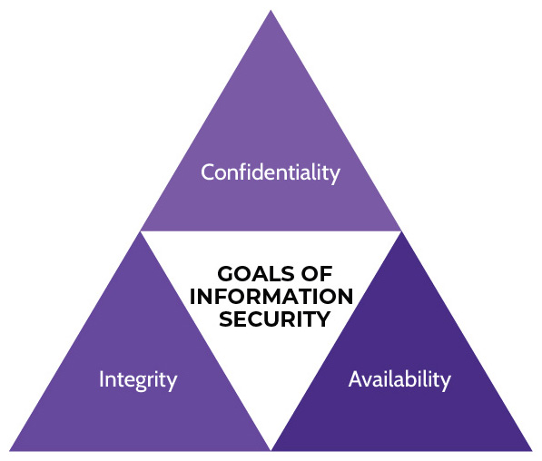
Figure 3-69: Information Security Goals
Computer systems can't be up and running and provide good availability without proper physical security controls in place. Physical security is about protection of the organization from around the building all the way to the inside and with the same overarching goals of providing confidentiality, integrity, and availability.
Know the primary goal of physical security
Like logical security, physical security employs several controls, but the names are slightly different. With logical security, preventive, detective, and corrective controls are used; with physical security, deter, detect, and correct are used. Deterrence is focused on preventing. Detecting is focused on identifying something. Assessing and responding is focused on correcting. More detail on these can be found in Table 3-58.
Primary Goal of Physical Security
Safety and protection of human life is the most important goal and focus of physical security, and this fact drives many of the decisions related to physical security. In simple terms, this simply means that the implementation of any physical security control should never put people in danger.
|
Deter/Prevent |
This type of control serves to deter or prevent an intruder from taking certain action. A sign in front of someone's property stating "All trespassers will be shot" or a sign stating "Danger: Mines" is a great example of a deterrent. A fence is a good example of a preventive control. The overall idea with preventive/deterrent controls is to try to prevent an attacker from attacking. While it would be ideal to prevent an attack from being successful, this is not a reasonable expectation, as all controls can be defeated. |
|
Delay |
Delay controls function to hinder activity being pursued by an intruder. Locks are a great example of delay controls; they serve to delay an intruder's activities. As such, they should never be counted upon by themselves and should be used in combination with other controls such as cameras to detect an attacker attempting to pick a lock and security guards who can assess and respond. |
|
Detect |
Detective controls help detect or alert to an intrusion. A barking dog is a good example of detective control; when the dog is quiet, all is well, and when the dog is barking, something might be amiss and needs to be investigated. A CCTV camera is another good example of a detective control, as it can detect and capture activity and help drive a proper response. |
|
Assess |
Assessment can lead to a proper response to a given situation. Assessment functions in the same manner as a corrective control. |
|
Respond |
Aligned with "assess" is "respond," which also functions in the same manner as a corrective control and denotes taking appropriate action to an event that has taken place. |
Table 3-58: Physical Security Controls
Threats to Physical Security
Threats to physical security might take any of a number of forms, and a list of them could grow very long. Below are a few examples:
Theft: The attacker steals items from the premises of the target.
Espionage: Usually sensitive or proprietary information (like a new drug research) is targeted by the attacker, who aims to obtain that and sell it to a competitor or on the dark web for monetary gain.
Dumpster diving: Inspecting a company's trash to obtain sensitive information that might not have been disposed in a secure manner.
Social engineering: Leveraging the human element and trying to persuade a company employee to perform an action or provide information to an unauthorized individual.
Shoulder surfing: A form of social engineering where the attacker is standing over someone's shoulder as they perform an activity (e.g., logging in to a sensitive resource) in the hope to gain sensitive information.
HVAC: Compromise the heating, ventilation, and air conditioning system for either access or damaging company equipment.
3.8.2 Layered Defense Model
CORE CONCEPTS |
|
|
One of the main concepts applied in physical security is the concept of layered defense. Essentially, this is defense-in-depth. Multiple layers of defense are put in place, starting outside the building of an organization. A typical first layer of physical security defense could be a fence. Then the next layer would be the perimeter of the building. But remember that human life is always at the forefront of any security system. Let's consider a question in relation to that. What's the optimal number of doors to have on a building's perimeter? The most optimal number of doors from a security standpoint is zero; however, this is not functional. So what's the next best answer? The next best number would be one, but that may impact personnel safety because buildings need to have multiple egress points so people can easily exit the premises in case of emergency. So that makes the ideal answer "as close to zero as possible."
3.9 Design site and facility security controls
3.9.1 Security Survey
CORE CONCEPTS |
|
|
How do we decide which physical security controls to put in place?
First, the most valuable assets and their associated risks must be identified; then, risk treatments can be evaluated and the most appropriate-based upon value-can be put in place. Because the focus is physical security, the risk management process is sometimes called a security survey or site survey; still, the goal remains the same: identify the most valuable assets and then consider risk treatments, based upon the vulnerabilities and threats to those assets.
This is the process in security, or site, survey: threat definition, target identification, facility characteristics. Then, based on survey findings, site planning can be conducted. Remember that when identifying appropriate controls, the goal of site planning is to protect people.
Though not specifically mentioned above, one of the primary driving questions behind physical security is "What and where are the most valuable areas?" Inside a building, for example, what's a wiring closet? Inside every office, hotel, hospital, there are rooms-often one on each floor and usually a main room-where network cables are pulled and other network equipment, like switches and routers, are housed. Should people have access to these areas? Of course not, unless they're specifically authorized to access these areas, because they're considered sensitive or high-value areas. The point is this: high-value areas within a facility or campus need to be identified and appropriate, and cost-effective controls to protect these areas should be implemented. Some key terms surrounding security surveying and high-value areas have been provided in Table 3-59 and Table 3-60.
|
Threat Definition |
This is where applicable threats are identified. These could be any type of threat that might impact the site. |
|
Target Identification |
What are the assets that might be targeted by threats (identified as a result of "threat definition")? |
|
Facility Characteristics |
Identify each asset's vulnerabilities. |
|
Life |
This is the number one priority of physical security-to protect life, to protect people. |
|
Property |
Closely aligned with the number one goal of protecting life is the goal of creating a safe physical work environment that anticipates ideal working conditions as well as conditions that might exist in the event of a disaster. This includes exterior and interior elements and should support the top priority of protecting people. |
|
Operations |
Items like an organizational Business Continuity Plan (BCP) and Disaster Recovery Plan (DRP) should be developed and utilized for this purpose. |
Table 3-59: Security Survey
|
Wiring Closets |
Typically found on each floor in a building, where wires and other important networking equipment might be located |
|
Media Storage |
The area where physical/digital media that store sensitive and value assets is located |
|
Evidence Storage |
The area where important evidence is stored |
|
Server Rooms |
The room(s) where the most important and valuable network assets and infrastructure are located |
|
Restricted Work Areas |
Any work locations that require additional security, due to the nature of the work being performed, the people performing the work, or any combination thereof |
Table 3-60: High-Value Areas
3.9.2 Perimeter
CORE CONCEPTS |
|
|
A few specific controls that can be placed around the perimeter of a building for protection include things like landscaping. Landscaping is actually a very important control. Things like trees and bushes can be placed around a building in such a manner to prevent close access to certain parts of the building and to direct how people move around the exterior of the building. Large trees should not be directly adjacent to a building, because people could potentially use them as cover. The same applies to dense foliage, which could block CCTV sightlines. With the proper landscaping and other well-placed perimeter controls, like lighting, around a building, people with bad intentions will have a very difficult time achieving their goals.
Grading is another control and refers to the slope of the ground. Does it make sense to slope the ground away from or toward a multimillion-dollar data center? Away, so if a massive rainstorm hits and causes flooding, the data center remains bone dry.
Bollards are another great physical security control. They're pop-up barriers, about the size of a thick pipe, that prevent cars from driving on certain streets or into restricted areas at certain times; they're also stationary and are often found in front of office buildings and especially in front of US State and Federal government buildings as well as in front of military base entry points. Stationary bollards in front of these buildings are usually quite large, and they are positioned in a manner to prevent vehicles, even large ones, from driving straight into the building or past a checkpoint and blowing up, which is what happened in the past at the FBI office in Oklahoma and resulted in significant loss of life. Many organizations that employ bollards will use large concrete flower planters around their buildings-this has the effect of looking attractive and defeating vehicle-based attacks.
3.9.3 Closed-circuit TV (CCTV)
CORE CONCEPTS |
|
|
What primary type of control are CCTV cameras?
Closed-circuit television cameras, better known as CCTV cameras, serve primarily as a detective control, though they also function as a deterrent and can be used for security audits. A few things to consider related to camera systems: First, placement. Cameras should cover major entrance and exit ways as well as other areas of importance, and they should be placed and positioned in a manner that allows a person's face and other important distinguishing features to be captured. Second, image quality. It's imperative that the quality of the captured images be considered, whether those images are captured during the day or at night and in any conditions. If the cameras are placed correctly, but the quality of the image is such that people are unrecognizable, then the system is worthless. Third, transmission media. Among other things, you must identify how will the images be transmitted back to the monitoring stations and recording systems, if there are people watching the camera feeds 24x7x365 or, if everything is going to be captured to tapes/hard drives, how long will the recordings be kept before being archived. Also note that local law may dictate some of these decisions, as in many areas of the world, strict privacy laws define for what purpose and how long images may be kept, who may view them, what areas the cameras cover, and whether they are recording public areas, and so on.
3.9.4 Passive Infrared Devices
CORE CONCEPTS |
|
|
|
How a passive infrared device works
What's a passive infrared device? It's a motion detector, and the way it detects motion is by picking up on infrared light. It's essentially a low-resolution camera that's able to detect infrared light by taking a picture of a room on a continual basis and then comparing the pictures. Human beings are usually warmer than a room, because they give off heat; so, when someone enters a room, the passive infrared device is comparing one image to the next. Very quickly, the device will see that the image has changed and send an alert, if programmed to do so, or otherwise make note of the presence of the person in the room. Passive infrared devices are very sensitive to temperature changes, and even in a manner contrary to the way most people would consider, especially in places, for example, like Texas. Texas temperatures often get warmer than the temperature of the human body. Once it's too hot outside, many passive infrared devices will note the change of something cooler instead of something hotter. As a result of this fact, passive infrared devices must constantly recalibrate themselves based on ambient temperature so they can detect what's happening.
3.9.5 Lighting
CORE CONCEPTS |
|
|
External lighting is a very good security control, especially as a deterrent. If a building is well lit, it's very hard to sneak around it at night. It's also good from a safety perspective. A well-lit exterior allows people to see where they're walking, and statistics show that attacks are far less prevalent in a well-lit parking lot. So external monitoring/lighting helps keep people safe, and it also allows camera systems to work optimally and to detect things.
3.9.6 Doors and Mantraps
CORE CONCEPTS |
|
|
What do mantraps prevent?
On the surface, the topic of doors does not typically receive much acclaim. However, in the realm of security and controls, there are a few things about doors that deserve attention. One of them concerns the composition of the door. In other words, how the door is made, as its composition makes a very big difference as to its security. The construction of the door makes a difference, and so does the construction of the frame. If the world's most secure steel door is hung on a wooden frame, what is an intruder going to do? They're going to bust the frame and kick in the door. So the door frame also matters. The final thing that needs to be considered is the location of the hinges. If the hinges are on the outside and accessible, the pins can be knocked out and the door easily removed. Many exterior doors on buildings have exterior hinges. Does this make the door more or less secure? It makes it less secure, but why are the hinges on the outside? For the safety of people, so when the door is pushed it swings outward. Unfortunately, there have been tragedies at places like night clubs when a fire breaks out or another emergency occurs, and everybody runs to escape and hit doors that open inward. Even though it's less secure, for the safety of people in places like nightclubs or movie theaters, doors should hinge outward.
A mantrap, on the other hand, is usually one of two things: a double set of doors, with space for one or two people in between, or, a turnstile, with enough room usually for one person. In either case, a mantrap is designed to prevent tailgating-an unauthorized person following an authorized person into a building or other secure location. In the case of a double set of doors, the authorized person enters the first door, and after the first door closes, the second door will open. Usually, two forms of authentication are involved: a badge to enter the first door and perhaps biometrics to open the second. If a tailgater somehow makes it through the first door, they'll immediately be noticed and will be trapped in the room. The other type of mantrap, a turnstile, is quite common in buildings around the world and only allows one person at a time. The person steps into a small chamber and the walls move around the person, giving them access to the inside.
3.9.7 Locks
CORE CONCEPTS |
|
|
|
|
What pieces of hardware are usually found on doors and door handles or around doors? Locks, like the traditional keyed lock, or, more likely in an office setting, some type of electronic lock-card reader, keypad, or biometric. Regardless of the type, locks are a delay control. Given enough time, just about any lock can be defeated; thus, they delay versus prevent.
Understand inherent weaknesses with some types of locks and precautions that should be taken
Depending upon the type of lock in use, a few precautions should be noted. Some locks are susceptible to shoulder-surfing, others to brute-force attacks, and many to multiple types of attack. Take a standard combination lock, for instance, where a dial is turned in alternating directions and stopped at a specific number at the end of each turn. Depending on the number of internal mechanisms, locks like this are often easily defeated. Furthermore, if the composition of the metal making up the lock is weak, it can easily be compromised. Keypad locks, where the digits are typically easy to see, can easily be shoulder-surfed. In cases like this, it makes sense to install some type of cover or shield to prevent others from seeing what code combination is being entered. And in cases where the keypad code is shared among people, the code should be changed, and access privileges reviewed frequently. Another means by which access to or within a building can be granted is using biometric systems. They're another way of gaining physical access.
Types of Locks
Table 3-61 contains some of the most common lock types. Each type of lock, whether mechanical or electrical, can be extremely complex and multiple variations can exist.
|
Mechanical |
Key |
A key operates a lock by being inserted into the keyway, for example, of a lock on a door, turned, and based upon the key design, moving tumblers inside the lock and thereby releasing the bolt and securing the door shut. There are many types of physical key locks. |
|
Combination |
A combination lock typically involves some type of rotating dial, which interacts with cams and the locking mechanism. The dial is usually populated with numbers, and the unlocking process commonly involves lining up the numbers in the proper sequence through a series of right/left turns, or directly on the cams. |
|
|
Magnetic |
Magnetic locks are often referred to simply as maglocks and are a combination of a powerful electromagnet and a steel or metal plate to which the electromagnet engages. Maglocks are typically operated through a button or via an attached card reader or motion sensor system-the type of operation often dependent upon where a maglock is utilized in a facility. |
|
|
Electronic |
Proximity / RFID |
Proximity/RFID cards are also referred to as key cards, and a defining feature is that they can be read simply by holding the card near the associated card reader. Proximity/RFID cards are often used as part of access control systems in buildings. |
|
Combination |
Combination, or keypad, locks are often used to secure entrances. They usually consist of a simple keypad containing numbers and perhaps a * and # symbol. The lock is typically tied to a central system for purposes of logging activity and managing users and associated passcodes/combinations are needed to unlock the entrance. Combination locks are susceptible to shoulder-surfing as well as to brute-force attacks. |
|
|
Biometric |
The use of biometrics as a form of identification has extended to include access control in buildings. Whether through fingerprint or palm scanning, or iris or retina scans, the use of biometrics has grown steadily over the years. They are very accurate and hard to defeat, but their primary drawback relates to concerns about privacy. |
Table 3-61: Lock Types
What determines the security of a combination lock?
With one type of lock in particular-combination-security is dependent upon one thing: the complexity of the combination. If the combination consists of only a few numbers or characters, it can easily be determined. By requiring a longer combination, complexity is increased exponentially and the possibility of a brute-force attack succeeding drops significantly.
3.9.8 Card Access/Biometrics
CORE CONCEPTS |
|
|
|
How card access/badge systems can be used to ensure people's safety
In the realm of physical security, card access and biometric security control mechanisms are often used and quite helpful with regards to automating passage of people through security checkpoints, doors, elevators, and other physical barriers. Often enough, card access control systems require a card to be read upon entry to a building or space and again on exit. These movements are typically logged by the access control system and can provide a level of safety for employees by being able to determine who may still be in a building and potentially their location, in the event of an emergency.
With card access, whomever possesses an authorized card would be able to gain access to secured areas, so in and of themselves, they may not be the most secure form of access control. Cards can be lost, an employee may loan their card to a colleague, and so on. Coupled with biometrics, however, access can be much more strictly enforced, and biometric access control can be used very successfully by itself. Biometric checks of this type often involve facial recognition, a palm scan, or a retina or iris scan.
Relative to each other, biometric access control systems are significantly more expensive than card access systems. Additionally, as privacy is more and more a topic of concern around the world, employees may not be comfortable with the use of biometric access control systems. Thus, they are best used where security is most important and the cost benefit of doing so makes sense.
3.9.9 Windows
CORE CONCEPTS |
|
|
|
|
|
What type of sensor is effective in a noisy environment?
Another important physical security control topic is windows. Most people love having lots of windows in their homes and at their place of work. They allow for wonderful views, lots of natural light, and fresh air. But windows represent a major weak point.
To mitigate that weakness, shock or glass break sensors can be used. Shock sensors must be installed on each pane of glass and are designed to detect the vibrations related to glass breaking. Glass break sensors are different, they are essentially microphones that are tuned to listen for the sound of glass breaking. The advantage of glass break sensors is typically fewer sensors are required as one glass break sensor could be listening for the sound of multiple windows breaking in a room.
Shock sensors are particularly useful and effective in noisy environments, as they can effectively detect glass breaking in loud occupied rooms (e.g., if there is a loud party).
3.9.10 Walls
CORE CONCEPTS |
|
Walls are another important aspect of physical security. Like doors, the composition of walls is the primary concern. A standard wood or steel frame wall is fairly easy to breach. Along with the composition, the height of a wall also contributes to its security. Does it extend from the floor to the ceiling? If so, is the ceiling a drop ceiling, where-in most cases-the wall ends at the drop ceiling? To ensure a secure room, the wall should extend from the floor to the true ceiling, not to a drop ceiling or anything similar. Similarly, in data centers, raised floors are often found, because this supports the flow of cool air from the HVAC system and routing of electric cables; in this case, walls should extend from the actual floor to the true ceiling.
3.9.11 Automated Teller Machine (ATM) Skimming
CORE CONCEPTS |
|
|
|
Skimming is the act of placing cleverly disguised technology at a point of sale-gas station pumps and Automated Teller Machines (ATM) are two frequent targets-and capturing debit and credit card information from unsuspecting customers. Gas station pumps, especially newer ones, include card reader technology that allows people to pay for gas at the pump, instead of going inside a building or otherwise needing to interact with an attendant. Similarly, ATMs can often be found outside of banks, inside convenience and grocery stores, and other places where people often need cash. ATMs bring the convenience of banking to each of these locations and allow people to withdraw cash, check balances, and even make deposits to checking and savings accounts without stepping foot inside a bank or interacting with a teller. As a result of the convenience and widespread use afforded by these card reader technologies, they're often the target of hackers and criminals.
Ways to detect or prevent skimming
Oftentimes, the skimming technology looks and functions like the real technology. The stolen information can be stored on the skimmer device, and more frequently it is transmitted to criminals via real-time methods that utilize mobile data or wireless connections. Even though skimmers look like the real thing, they can be detected by a few methods:
1. Pull on the keypad or card insert/reader mechanism to see if it detaches easily. Card readers in any location-gas pump, ATM, retail check-out, and so on-should be tamperproof. Ideally, readers include antitampering protection to prevent the placement of skimmers.
2. Look at the spelling on the device itself. Many criminals do not have strong command of the English language, and misspellings are often indicative of something amiss.
3. If errors occur during the transaction process, this could be a sign that a skimmer is in use. Usually, a gas pump reader or ATM will indicate an unavailable system at first glance. If the system appears to be available and then throws errors after a card has been entered and PIN code entered, a skimmer may have just captured the information.
Infrastructure Support Systems
The term "infrastructure support systems" refers to the three major services or utilities that are always a focus of physical security; they're often referred to as power, ping, and pipe. Power is pretty obvious-electricity. Ping refers to the internet. Pipe refers to cooling water and how it is piped into a facility. Most buildings, especially data centers, have a significant cooling water need; without it, buildings would quickly overheat, leading to equipment failure and disgruntled people. Physical security is concerned with providing a good, clean, consistent supply of all three utilities.
3.9.12 Power
CORE CONCEPTS |
|
|
|
Within any organization, disruptions in electrical power can seriously impact the business. The goal is clean, steady power. Two of the major systems used to provide clean, consistent power are Uninterruptible Power Supply (UPS) systems and generators.
What's a UPS? Essentially, it's a giant battery-it could be one battery or multiple batteries linked together-and it is designed to provide power when regular electrical power goes out. However, most UPSs are designed to only provide power for a short period of time lasting in minutes. UPSs also provide power conditioning, which simply means the power that enters the UPS is cleaned up-there are no sags, dips, or other power issues with what is flowing to important devices.
Generators are typically large diesel engines hooked up to an alternator to produce electricity. Generators can run for long periods of time, depending upon the supply of fuel. When the power fails, a signal is sent to the generators to turn on, but they can take some time-maybe up to a minute-to become fully functional. UPSs provide short-term power in the interim, while the generator engine becomes fully operational to provide long-term-power.
Within the area of power, situations can arise where there is no power available, not enough power, or too much power. The various types of power degradations and disruptions are summarized in Table 3-62.
|
Short period of time (Milliseconds) |
Long period of time (Seconds, minutes, hours, days) |
|
No Power |
Fault |
Blackout |
|
Not enough power (e.g., low voltage) |
Sag / Dip |
Brownout |
|
Too much power (e.g., high voltage) |
Spike |
Surge |
Table 3-62: Power
3.9.13 Heating Ventilation and Air Conditioning (HVAC)
CORE CONCEPTS |
|
|
|
As mentioned earlier, one aspect of physical security is the maintenance of correct temperatures within a building. People, equipment, and other areas of a building all require optimal temperatures in order to function most effectively and efficiently. Heating, ventilation, and air conditioning (HVAC) systems provide air that is the right temperature, the right humidity, and the right air quality. Variations in any or all these variables can significantly impact a work environment.
The American Society of Heating, Refrigeration, and Air-Conditioning Engineers (ASHRAE) Technical Committee 9.9 created widely accepted guidelines for optimal temperature and humidity set-points in data centers, and these guidelines are summarized in Table 3-63.
|
Low |
High |
|
Temperature |
64.4°F / 18°C |
80.6°F / 27°C |
|
Humidity |
40% Relative humidity |
60% Relative humidity |
Table 3-63: ASHRAE Temperature and Humidity Guielines
If the temperature is too hot or cold, people get cranky, and equipment may not function correctly. If the humidity is too low, static electricity can develop and potentially cause electrical shorts; if humidity is too high, condensation can develop, which may cause corrosion and shorts as well. Air quality, especially in data centers, is also important, as this is the air used to cool servers. If the air is filled with dust and debris, over time, servers and other equipment will become filled with the same things. This can lead to overheating and eventually failure. So, air should be filtered, and contaminants removed.
Description of "positive pressurization" and the benefit it provides
One term related to air quality is "positive pressurization." Positive pressurization refers to air that is pumped into a server room or data center at a slightly above ambient pressure. It's not much, but when higher than the ambient pressure and a door to the server room or data center opens, clean air will rush out of the room rather than potentially dirty air rushing in. Even if cracks exist in the walls or someone cracks a window, with positive pressurization all that will happen is clean air will flow out - preventing dirty air from infiltrating. In summary, the reason to use positive pressurization is to keep the air in the data center cleaner-free of contaminants that would collect inside equipment causing it to overheat and fail.
The above recommendations are summarized in Table 3-64.
|
Temperature |
Humidity |
Air Quality |
|
Avoid too hot or too cold |
Too low = static electricity Too high = condensation may develop and lead to corrosion or shorts |
Clean air; contaminants should be filtered out Positive pressurization |
Table 3-64: HVAC Recommendations
3.9.14 Fire
CORE CONCEPTS |
|
|
|
|
|
|
|
Understand types of fire detection systems and the most effective for early detection
Think of fire as a three-legged stool. If one of the legs is removed, the fire-like the stool-fails; it goes out. The three legs of the fire stool are: fuel, oxygen, and heat. All three are required for a fire to burn. Take any one of the three away, and the fire goes out. This is where it makes sense to think about fire as a risk. When mitigating any risk, preventive, detective, and corrective controls should be put in place. Ideally, where fire is concerned, the goal is prevention, and one of the best ways to prevent fire is not to have combustible materials in the vicinity of what is being protected.
If fire can't be prevented, it should be easily detected. And once fire is detected, it should be possible to immediately correct it, in other words, to quickly extinguish it. This is where fire detection systems as well as water-based and gas-based fire suppression systems come into play.
Even in the best-case scenarios, fires will still happen, and in those cases it's critical that they can be quickly detected. Three primary types of fire detection systems exist: flame, heat, and smoke, as also seen in Table 3-65.
|
Flame |
Flame detectors are actually video cameras that detect infrared and UV light created by a flame. The camera is pointed at an area, and if infrared or UV light is detected, a fire is likely present. If a fire is far enough along that flames are present, it's probably pretty far along. So flame detectors are not a good early detection tool. |
|
|
Smoke |
Ionization |
Ionization detectors have a small amount of radioactive material embedded in the sensor that ionizes particles that flow between two metal plates. If smoke particles enter the chamber that houses the plates and radioactive material, the ionization process will be disrupted, allowing fire to be detected. This type of detector responds more quickly to flaming/fast fires. |
|
Photoelectric / Optical |
Photoelectric sensors are made up of a light source and a sensor, and the light source is pointed slightly off-angle relative to the sensor. If smoke particles pass through the sensing chamber, the off-angle light will be refracted more directly into the sensor. Like Ionization, this change in the sensing chamber is indicative of a fire. This type of detector responds more quickly to smoldering fires. |
|
|
Dual |
Most sensors today are dual sensors-they incorporate both ionization and optical sensors as part of their functionality. |
|
|
VESDA |
Of the types of smoke detection systems noted, the best is known as VESDA-it is the most expensive and the best at detecting a fire very early. VESDA, which stands for Very Early Smoke Detection Apparatus, is a smoke detector that can detect a fire at the smoldering, or what is known as incipient, stage. This type of device is usually found in data centers, clean rooms, art galleries, and other locations that house very high-value equipment or assets. |
|
|
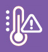 Heat (rate of rise) |
Heat detectors are literally just temperature sensors that are placed around a building or data center, and they look for rapid rises in temperature. If the temperature in a given area rises very quickly, there's likely a fire present. However, like flame detectors, if a fire has grown to the point where the ambient temperature is spiking, the fire is likely quite advanced. Heat detectors, therefore, are also very ineffective early detection tools. |
|
Table 3-65: Fire Detection Systems
Best Way to Prevent or Limit Damage from a Fire
As already mentioned, the best way to prevent a fire is to minimize combustible materials in proximity to valuable assets. For example, in a data center, where server and other network equipment is routinely added and removed, the new pieces of equipment should be unpacked and unboxed on the loading dock, leaving all the combustible cardboard and other material there and only transporting the bare metal hardware into the room. However, as noted above, in the event a fire does occur, the best way to limit damage is through early detection, and the best way to do this is through implementation of a VESDA smoke detector that is capable of detecting fire at the incipient stage.
Fire Suppression
After a fire has been detected, the goal is to correct it, or put it out. Fire correction systems fall into two categories: water-based and gas-based. Water-based systems use water to extinguish the fire. They remove the heat from a fire, which causes it to cease burning.
Water-Based Fire Suppression Systems
Understand the pros and cons of water-based and gas-based suppression systemzs and which type is best for a data center and other places where expensive equipment and other items are housed
Four primary types of water-based systems exist: wet pipe, dry pipe, pre-action, and deluge, as described in Table 3-66. Water-based fire suppression systems work by removing heat from the fire equation. Relative to gas-based systems, they are much less expensive, and they are much simpler to operate. However, a major disadvantage of water-based systems is that they use water, which could potentially destroy millions of dollars of equipment in the event of a fire. So water-based systems are not typically found in data centers or other areas where their use would cause significant damage. This is where gas-based systems come into play, though they are significantly more expensive than water-based systems.
|
Wet Pipe |
Wet pipe means the pipes in a sprinkler system are "wet"-filled with pressurized water at all times. In the event of activation, water will flow until the water source is shut off. This can result in significant excess water after a fire has been extinguished. Though inexpensive, wet systems include some significant disadvantages:
|
|
Dry Pipe |
Dry pipe systems appear very similar to wet-based systems, with the big difference being that dry pipe systems do not always have pressurized water in the pipes. They're dry and typically filled with some type of pressured gas (e.g., air or nitrogen). Dry pipe systems are often combined with some type of pre-action system (defined below) that, when triggered, activates a valve that allows water to fill the pipes very quickly and extinguish the fire. |
|
Pre-action |
Pre-action means the fire suppression is armed when something happens. For example, in the context of a dry pipe system, a pre-action system-which incorporates a detection system-will only activate valves that release water when a fire is detected. Many pre-action systems are tied to the primary "standpipe"-the main water pipe-in a building. A standpipe is tied to piping on each floor, with a corresponding valve off the standpipe on each floor. With a pre-action system in place, if a fire is detected on the third floor, for example, the system will activate the valve connected to the piping on the third floor, releasing water only to that floor. Additionally, only the sprinkler heads that have been activated by heat on the that floor will shower water. This type of system offers great advantages:
|
|
Deluge |
A deluge system involves massive amounts of water flowing at once. With it, all sprinkler heads are in the open position. Thus, if a fire is detected, when the pre-action system activates the water valves, water will immediately flood the pipes and flow out of every sprinkler head. A deluge system should only be used where immediate extinguishment of a fire is required, like in a fireworks or explosives factory, where a fire could cause a catastrophic explosion. |
Table 3-66: Water-Based Fire Suppression Systems
Gas-Based Fire Suppression Systems
Gas-based systems are more expensive to install and more expensive to maintain, among other things, but they possess one significant advantage: they don't use water. Instead, they use various types of gases, and these gases are specifically selected because they don't typically damage expensive equipment. Gas-based systems extinguish fires by one of two means: they remove the oxygen from the impacted location or interrupt the chemical process that the fire consists of. Note that care must be taken with gas-based systems because although they're great at putting out a fire they can also kill everybody in a room. Typically, prior to a gas-based system deploying, an alarm sounds, emergency lights blink, and people are provided with ample time to evacuate the area before the gas is released.
Gases most commonly used in gas-based systems are INERGEN, Argonite, FM200, and Aero-K, as shown in Table 3-67. One gas that used to be popular but is now illegal is Halon; it should never be used in a gas-based system and was outlawed because of its significant negative impact on the environment, specifically on the ozone layer that protects the Earth's atmosphere.
|
INERGEN |
INERGEN is a gas-based system that became popular in the early 1990s in response to the banning and subsequent replacement of Halon-based systems. INERGEN works like CO2 in that it reduces the oxygen concentration where a fire exists, thus helping extinguish it. At the same time, and unlike CO2-based systems, the use of INERGEN still allows for a breathable atmosphere, which is critical for the sake of personnel who may still be in the area when an INERGEN system is discharged. |
|
Argonite |
Argonite is a gas-based system consisting of a mixture of argon and nitrogen. Similar to INERGEN, its use does not endanger human life, and it too is safe for the environment and therefore a suitable replacement for Halon. |
|
FM-200 |
Like INERGEN and Argonite, FM-200 is considered a "clean agent," meaning it does not endanger human life when used, and it does not leave residue, which makes it safe for high-value computing equipment and other hardware typically found in a data center. |
|
Aero-K |
Aero-K is a fire suppression system that disperses an ultrafine, potassium-based aerosol that can quickly suppress a fire. Additionally, the aerosol mist remains suspended in the air for a period of time, which allows it to prevent reignition of the fire as well as to disperse naturally and not leave a residue on equipment. It too is considered environmentally friendly and a safe alternative to Halon. |
Table 3-67: Gas Fire Suppression Systems
Fire Extinguishers
Because different types of fire exist, different types of fire extinguishers also exist, as shown in Table 3-68. Fire extinguishers are denoted by "class," and different class extinguishers put out different types of fire:
Class A extinguishers are used for putting out fires fueled by common combustibles
Class B extinguishers put out liquid-based fires, like those fueled by gasoline
Class C extinguishers put out electrical fires
Class D extinguishers put out fires fueled by combustible metals; they use dry powder as a suppression agent
Class K extinguishers are usually found in commercial kitchens, and they use wet chemicals as suppression agents.
|
Class |
Type of Fire |
Suppression Agents |
|
A |
Common combustibles |
Water, foam, dry chemicals |
|
B |
Liquid |
Gas, CO2, foam, dry chemicals |
|
C |
Electrical |
Gas, CO2, dry chemicals |
|
D |
Combustible metals |
Dry powders |
|
K |
Commercial kitchens |
Wet chemicals |
Table 3-68: Fire Extinguisher Types
CO2
Understand why CO2 is an effective suppression agent
CO2, better known as carbon dioxide, is something commonly found in nature and is also commonly used as a suppression agent. More importantly, it's not corrosive to expensive equipment. Some other suppression agents corrode equipment. However, the one caveat with CO2 is this: if too much is used, and people are present, those people might die, because it removes oxygen from the air. If using a gas-based system, a better alternative would be one of the systems that utilizes the gases noted above, like Aero-K, FM-200, Argonite, or INERGEN.
3.10 Manage the Information System Lifecycle
The information system lifecycle is the entire lifespan of an information system, from its initial conceptualization to its eventual decommissioning. It is essentially the same as the system life cycle, which we discuss in section 8.1.2. However, you may notice a slight difference in the steps and their names. Integration testing is part of the development phase, while verification and validation are parts of the overall testing process.
 MINDMAP REVIEW VIDEOS
MINDMAP REVIEW VIDEOS
 CISSP PRACTICE QUESTION APP
CISSP PRACTICE QUESTION APP
Download the Destination CISSP Practice Question app for Domain 3 practice questions